Archives Actus Nlle Zélande
|
Pour consulter une archive, cliquez sur un lieu ci-dessous |
| 2009 Avant le départ |
| 2009 Caraïbes |
| 2009 Panama-Galapagos |
| 2009 Gambier |
| 2010 Marquises |
| 2010 Tuamotu |
| 2010 Tahiti |
| 2010 Cook-Niue |
| 2010 Tonga - Fidji |
| ... |
| 2012 Australie |
| 2012 Polynésie |
| 2013 Hawaii |
| 2013 Canada |
| 2013 USA |
| 2014 Costa Rica |
| 2015 Costa Rica |
| 2016 Costa Rica |
| ...ou revenez aux actualités |
31 janvier 2012 - Enflure
Il est temps qu'on parte... 6 semaines de retour auront été néfastes pour nos organismes, à tel point que Cécile, d'ordinaire peu sensible aux excès gastronomiques, a gonflé comme une chambre à air.
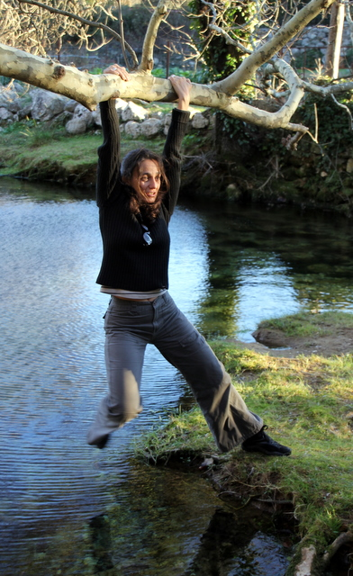
Cécile à Saint Jean de Buèges
Grâce à sa constitution hors du commun, Cécile a résisté au foie gras des deux réveillons, au huîtres et galettes du séjour en Bretagne chez nos amis les Manuias ainsi qu'aux spécialités belges telles que moambe, américain/frites et anguilles au vert. Elle a même supporté les litres de champagne. Mais cela n'a pas suffit. Ce sont les 17 raclettes qui l'ont eue... Trop, c'est trop. Maintenant, elle m'a rejoint au pays des enflures.
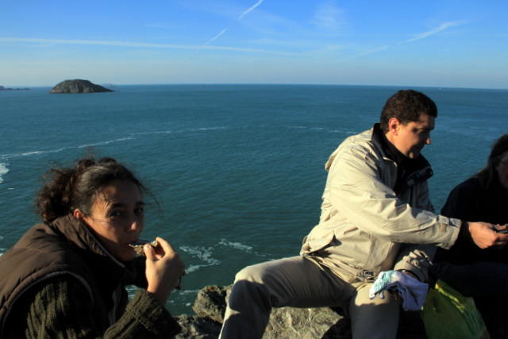
Cécile en Bretagne
Notre séjour touche à sa fin, nous avons vendu notre maison. Alors que toutes nos affaires étaient empaquetées, prêtes à être enlevées par les déménageurs, nous avons descendu notre matelas devant le feu ouvert pour passer une dernière nuit dans la maison qui désormais appartient à des inconnus.
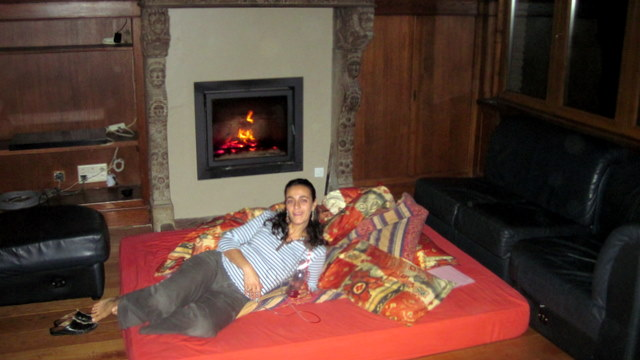
Cécile à la maison
Nous avons quitté administrativement la Belgique et préparé nos proches pour 3 années de voyage supplémentaires. En février et mars, nous commencerons pas visiter l'Australie. On en profitera pour dégonfler un peu...
19 décembre 2011 - Retour en Belgique
Après 1000 jours de voyage, il était temps de rentrer en Belgique, saluer la famille et les amis et profiter de l'occasion pour ramener une partie des trésors accumulés en cours de route (et faire de la place pour les artefacts que nous n'allons pas manquer de collectionner pendant la suite du voyage).
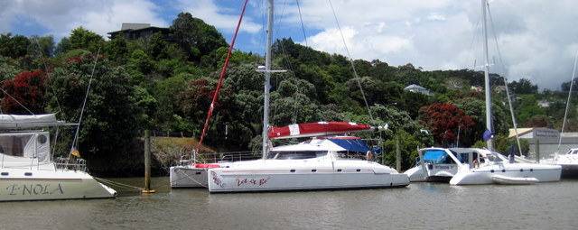
Let It Be au piquet
Avant de quitter (momentanément) Whangarei et sa marina, nous avons placé Let It Be dans la file de cata, au milieu de la rivière, attaché à deux piquets. Nous avons ensuite placé nos quelques 100 kg de bagage dans le coffre de la voiture, avant de prendre la direction d'Auckland, première halte dans notre voyage de retour qui dura près de 36 heures. Nous avons confié à nos voisins de pilotis, le soin de veiller sur notre bateau en notre absence, au cas improbable où un triste sire viendrait le visiter avec de mauvaises intentions.
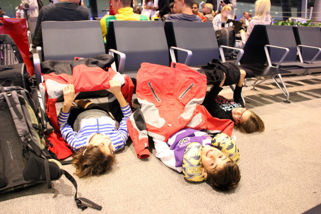
Les enfants s'occupent comme ils peuvent
Nous avons donc passé 36 heures dans les avions et les aéroports, en faisant escale à Sydney et Abu Dhabi. Les enfants ont été bien sages, malgré l'évidente morosité de ce genre de voyage. Il faut dire qu'ils étaient impatients de retrouver leur cousins et leurs copains et copines.
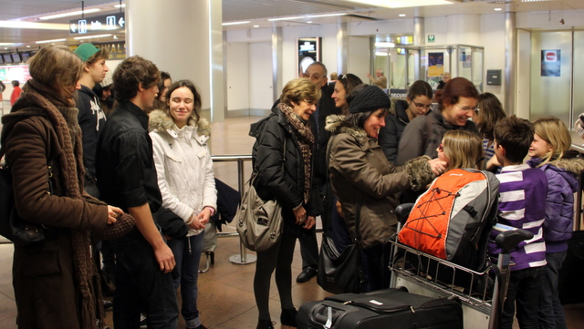
Accueil triomphal à Zaventem
Arrivés à Bruxelles, nous avon été accueillis par toute la famille de Cécile. Nous avons rapidement retrouvé nos marques et les enfants ont même pu jouer dans la neige (une substance dont ils auraient oublié l'existence s'il n'y avait de congélateur à bord du bateau). Nous allons maintenant rester 6 semaines en Europe, avant d'entamer notre retour sur la Nouvelle Zélande par un voyage de 8 semaines en Australie. A bientôt donc...
9 décembre 2011 - Bloody Frenchies
La marina se remplit petit à petit. Les bateaux arrivent en Nlle Zélande en provenance des Fidji, des Tonga ou de Nlle Calédonie. Certains viennent chercher refuge à Whangarei, telle Margot, un catamaran français arrivé ce matin (et que nous avions rencontré aux Marquises il y a presque 2 ans). Nous les attendions car non seulement nous sommes le premier catamaran de la file (et donc celui qu'on percute quand on rate l'entrée) et nous servons également d'interprètes entre les marins français unilingues et les autorités suprêmes de la marina, unilingues également, mais pas dans la même langue...
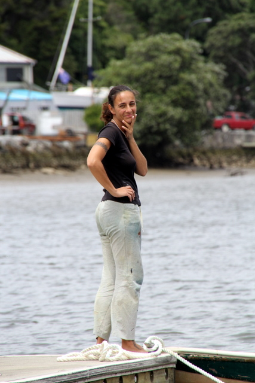
Cécile s'interroge en voyant le bateau
Pour faire un créneau dans la file de catamarans le long du ponton, il faut se faufiler entre les bateaux et la mangrove. A marée haute, c'est chose faisable, si l'on prend soin de s'écarter de la mangrove. C'est ce que n'a pas fait Margot, qui s'est engagé dans le chenal lors de la marée descendante et s'est lamentablement échoué.
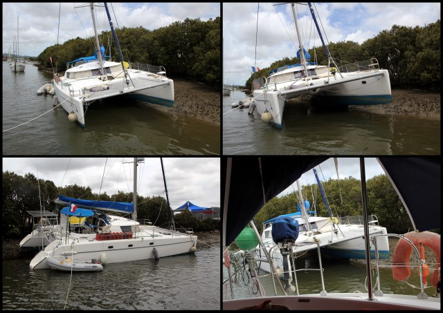
Et voilà ce qui arrive quand on fait les cowboys
On a eu beau leur dire de coller Let It Be, ils n'ont rien voulu entendre. Une fois encastrés dans la berge, ils n'ont plus bougé. La moitié des marins du port s'est approchée pour aider les infortunés français mais rien n'y fît: ils étaient coincés. Perchés sur leur petit tas de boue, ils n'avaient qu'à attendre la prochaine marée haute (12h plus tard) sous les quolibets bienveillants des passants.
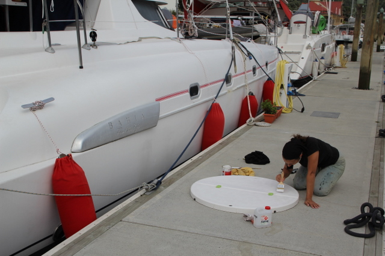
Cécile ne se laisse pas distraire
Ces péripéties n'ont pas empêché Cécile de terminer la deuxième couche de peinture antidérapante dans le cockpit (à commencer par ce truc rond, qu'on appelle le jacuzzi, et qui nous permet d'accéder aux caves du bateau). Décidémment, Let It Be sera comme neuf quand nous partirons !! Au passage, vous remarquerez que nos défenses (ce sont les boudins qui se logent entre la coque et le ponton) sont dorénavant tout de rouge vêtus, comme le petit chaperon du même nom. C'est le fruit d'un des treize travaux d'Hercécile.
6 décembre 2011 - Petit exposé technique
Aujourd'hui, nous avons reçu nos nouveaux hublots. Les anciens sont devenus translucides, ce qui nuit à notre vision panoramique. J'ai décidé de les remplacer sur le champ et de profiter de l'occasion pour exposer de manière magistrale mon savoir-faire en entretien de bateau, moi qui ai déjà parcouru plus de 10.000 miles sur les océans, et ma femme aussi, c'est dire si on s'y connaît.
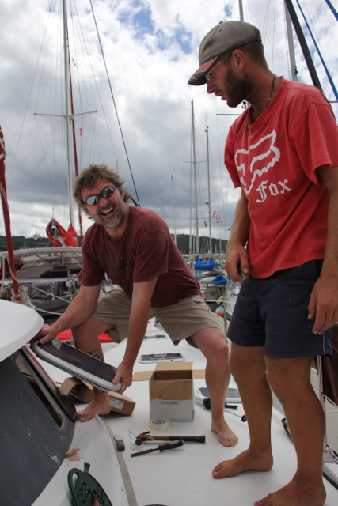
Je dépose le hublot déchu
J'ai convié Dan à admirer mon travail. Dan, qui a construit son catamaran lui-même, est très bien outillé, raison pour laquelle je l'ai autorisé à découvrir mon tournemain particulier en matière de remplacement de hublots. Sous ses yeux ébahis, j'ai commencé par extraire le matériel obsolète avec une facilité déconcertante.
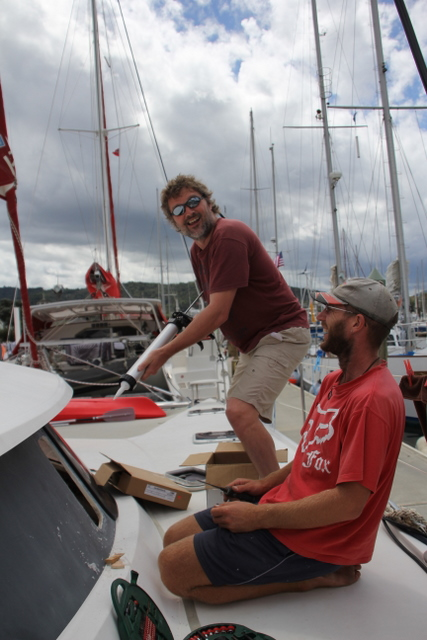
Je dispose le joint étanche
Ensuite, j'ai pris une grosse seringue pleine de colle blanchâtre et j'ai enduit le chassis. Enfin, j'ai fumé un cigare pendant que Dan suivait mes instructions. Grâce à ce travail d'équipe, nous avons maintenant un magnifique hublot de cuisine tout neuf. En plus, il est transparent, à tel point qu'on dirait qu'il n'y en a pas.
4 décembre 2011 - La vie suit son court
Toujours fermement amarré au ponton de la marina, Let It Be a fière allure. Malgré les conditions adverses, le vent permanent et la pluie incessante, Cécile continue à travailler pendant que les enfants jouent à l'ordinateur et que je bois des bières.
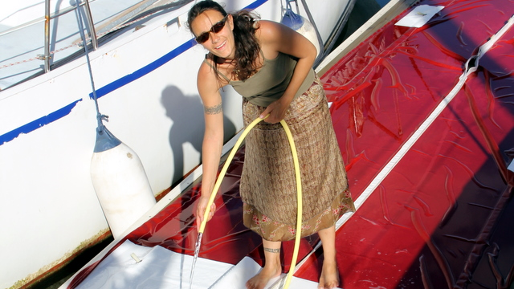
Cécile lave le lazy bag
Comme il commençait à montrer des signes de faiblesse, nous avons démonté le lazy bag (c'est le 'sac' qui protège les voiles quand elles ne sont pas hissées). Cécile l'a porté chez la couturière qui a recousu la fermeture éclair et renforcé les fixations. Ensuite, Cécile l'a récuré pendant que je buvais une bière.
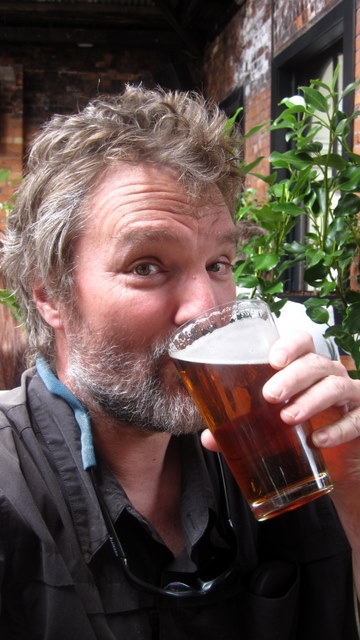
Je bois une bière
Ensuite, Cécile a installé notre nouveau panneau solaire de 190W qui nous permet d'être définitivement autonomes en énergie, à condition que le soleil veuille bien se montrer. Cécile s'est alors lancée dans la construction d'un berceau en inox destiné à recevoir notre barbecue au gaz, pendant que Syr Daria s'entraînait à monter un étalon rétif et que je buvais une bière.
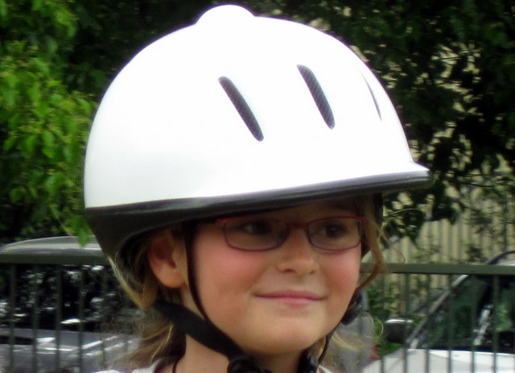
Syr Daria
Pour terminer, Cécile n'avait plus qu'à trier les vêtements des enfants, ranger les milliers de feuilles de cours pour les prochains trimestres scolaires de l'EAD, refaire le plein d'eau, faire 2 ou 3 lessives, laver le pont, faire la vaiselle, préparer les affaires pour notre voyage en Australie, faire les courses pour la semaine au supermarché du coin et lancer une nouvelle fermentation car, à force de boire des bières, j'ai épuisé mon stock. Vraiment la vie sur un bateau, ce n'est pas tous les jours dimanche...
27 novembre 2011 - Week-end à Auckland
Il y a quelques semaines, nous avions promis à Syr Daria de l'emmener au zoo d'Auckland pour son 9ème anniversaire. Profitant du beau temps de ce week-end estival, nous avons tenu notre promesse: Cécile a organisé un minitrip à la Ushuaia: exploration de la faune marine de l'aquarium, observation de la faune terrestre au vivarium, sans oublier une étude colorée de la faune humaine au tatouarium.
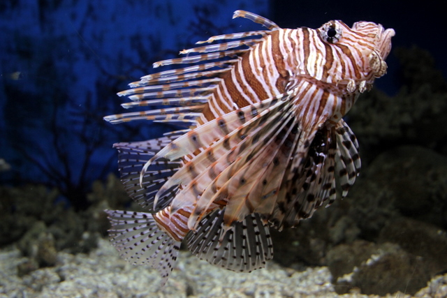
Un poisson lion !!
Nous avons donc commencé par l'aquarium d'Auckland qui vaut vraiment le détour: enfouie dans les profondeurs d'anciens égouts Aucklandais, se trouve une improbable colonie de pingouins arctiques, laquelle nécessite la production de 3T de neige chaque jour. Un peu plus loin, un tube de plexiglas nous a emmenés au coeur d'une meute (ou d'un banc?) de requins sanguinaires qui nageaient au-dessus de nos têtes, à l'affût de la moindre inattention (et d'un trou dans le plexi) pour nous croquer. Vraiment, le requinarium est d'une grande impressionnance.
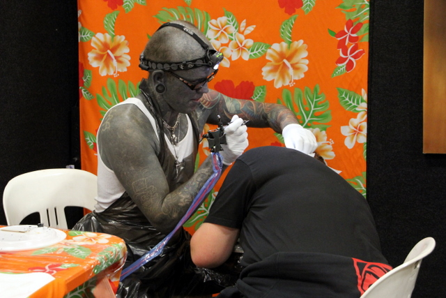
Je vous assure qu'il n'est pas sale
Sans attendre, nous avons ensuite rejoint une autre manifestation de masse: la convention annuelle des tatoueurs néo-zélandais. Je vois déjà la stupeur se dessiner sur vos visages mais pourtant c'est bien vrai: nous sommes allés voir ce qui se fait de mieux en matière d'encrage sous le ciel austral. Et force est d'admettre qu'il y a sur cette terre des gens différents... Bref, on n'est pas resté trop longtemps, de peur de nous laisser tenter et de finir comme le monsieur de la photo. Nous nous sommes donc vite dirigés vers notre hôtel où Kenya nous a démontré son esprit d'entreprise: en attendant que son bain ne soit rempli (et ça prenait beaucoup de temps), elle voulait se faire un chocolat chaud. Elle n'a rien trouvé de mieux que de vider, un par un, 10 petits capuchons de lait et de les faire chauffer dans la bouilloire électrique. Il faut dire qu'elle avait le temps: elle avait oublié de mettre le bouchon dans la baignoire...
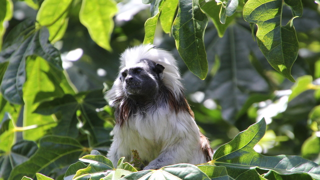
Un primate
Bref, on s'est bien amusé et, le lendemain, nous avons visité le fameux zoo d'Auckland, dont la particularité est d'être très bien intégré à la nature locale, si bien qu'on se croit vraiment en Afrique avec les lions, en Indonésie avec les singes ou aux pôles avec les phoques. Et comme il faisait beau, je me suis tapé le dernier coup de soleil de l'année.
15 novembre 2011 - Le look, c'est important
Lorsque nous avons entendu parler de lunettes destinées à combattre le mal de mer, nous avons bien ri. Quel naïf pourrait croire à de telles fadaises? Cependant, ceux qui en sont accablés le savent: la seule pensée d'une agonie longue et inévitable fait frémir les plus robustes marins au moment de larguer les amarres. En conséquence, toute innovation, aussi farfelue soit elle, vaut la peine d'être étudiée, voire expérimentée. C'est pourquoi nous avons fait acquisition de 2 paires, en vue d'un essai dès notre prochaine sortie. J'avoue que le doute m'assaille mais il est rare que l'esthétique et l'efficacité se marient harmonieusement, ce qui permet tous les espoirs pour ces lunettes.
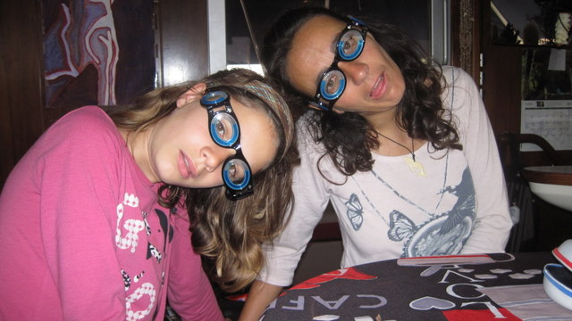
C'est ravissant !!
Sur le plan gastronomique, nous avons profité d'un beau dimanche matin pour nous rendre au restaurant de la marina afin de savourer un 'breakfeast' roboratif. Sidney, qui n'a pas peur des expériences extrêmes, a commandé un 'toast' aux champignons. Sur la photo ci-dessous, vous voyez ce qu'il a reçu... Eh oui, on a bien vérifié sur la carte et il n'y a pas d'erreur possible: cette purée grisâtre est bien ce qu'ils appellent des 'toasts aux champignons'. Après les huîtres en beignet de Cécile, on aurait pourtant dû être sur nos gardes...
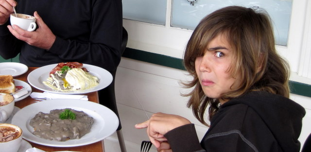
Non, non, ce n'est pas du kloug
Enfin, ils ne soignent pas le look de leur plat mais nous on veille à celui de notre bateau. Nous avions déjà décoré les coques avec de magnifiques notes rouges mais il nous manquait la clef de sol. C'est maintenant chose faite: les étraves sont ornées d'une clef 'à la Maori' que nous envient tous les autres marins (enfin, ceux qui ont du goût). En plus, c'est une oeuvre unique, réalisée conjointement par Moko, son pote, Brian, Eric et Cécile, rien que pour Let It Be.
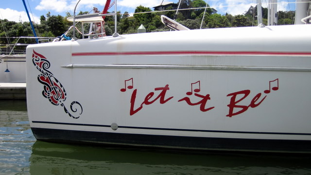
Elle est pas belle notre clef de sol?
9 octobre 2011 - Promenons-nous dans les bois
Quand vient la fin de l'été, sur la plage, il faut alors se quitter, peut-être pour toujours...mais c'est pas sûr. Après avoir installé Windows 7 sur mon vieux PC (parce qu'il se plantait sans raison toutes les 15 minutes), je constatai que MaxSea, notre fidèle logiciel de navigation et cartographie, ne fonctionnait plus. J'ai eu beau m'énerver, rien n'y a fait. Ca marchait plus. Alors, plutôt que de rester à fulminer dans ma cabine, j'ai décrété qu'on allait profiter du beau temps.
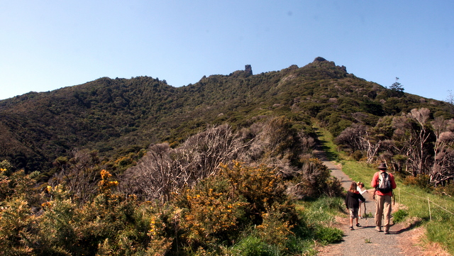
Départ vers les sommets
En effet, ici, aux antipodes, l'été ne se termine pas: il s'annonce et, en amateurs éclairés, nous n'avons pas raté ses prémices. Profitant du grand soleil du week end, nous avons coup sur coup organisé le premier barbecue et la première promenade de printemps.
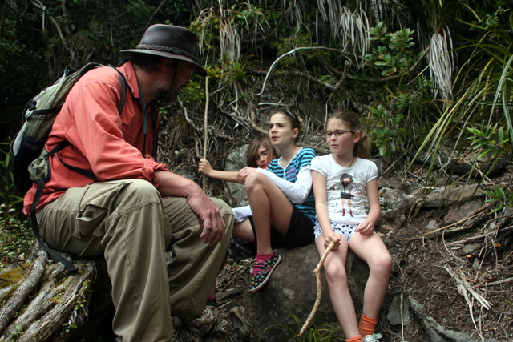
Petite halte en forêt
Depuis que nous sommes à Whangarei, nous rêvons de nous rendre dans l'estuaire du Hâtea, le fleuve qui arrose la ville. Située 30 km au sud est de Whangarei, l'embouchure du fleuve est défendue par des collines escarpées, d'où il est aisé de jeter de l'huile sur les assaillants ou de couler leurs misérables navires à l'aide de puissantes bombardes.
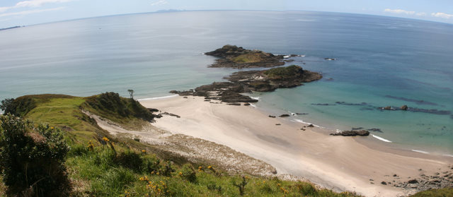
Descente vers la plage
C'est aussi un endroit idéal pour se promener quand il fait beau et c'est précisément ce que nous fîmes en ce dimanche. La ballade de 3 heures nous promène de la route vers un promontoire belvederesque, puis nous permet de suivre la crête jusqu'à la fameuse Ocean Beach qui fait fasse à l'immensité de la mer, vers l'est.
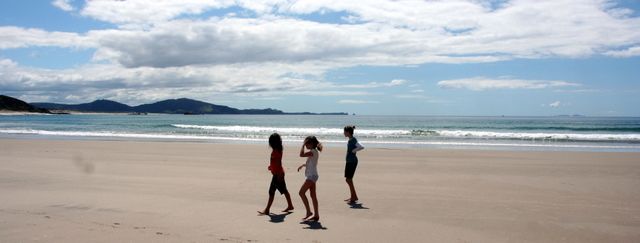
La plage, les enfants, l'air pur
La randonnée permet de traverser des paysages époustouflants, alternant forêt, steppe et même sable de la plage. En plus, après une telle débauche d'énergie, nous nous sommes rassasiés dans le meilleur restaurant du coin: le Deck, où l'on mange des pizzas, des glaces, des frites. Bref, la quintessence de la gastronomie kiwie. Cécile n'a pas résisté plus longtemps: elle a commandé les fameuses huîtres du cru. A sa grande surprise, la serveuse est revenue quelques minutes plus tard avec 6 magnifiques beignets: ici, on mange les huîtres frites, comme le reste !!!
Et, à propos, en rentrant au bateau, j'eu l'idée brillante de relancer le petit programme de modification du registry que j'avais utilisé lors de la première installation de MaxSea. Et, miracle!!!, ça remarche. C'est beau la technologie...
8 octobre 2011 - Same player shoots again
Au rayon des dernières nouveautés, voici une perle: Cécile s'est faite tatouer dans mon dos. Enfin, je veux dire dans le sien, mais à mon insu, alors que j'avais le dos tourné. Elle s'est rendue secrètement dans un endroit appelé Native Ink et a forcé l'admiration du Maori local par sa bravoure et son incroyable volonté, un peu comme si elle était en fer. De fait, a voir la tête du Maori en question, un certain Moko, on voit tout de suite qu'on a affaire à un spécialiste de la torture.
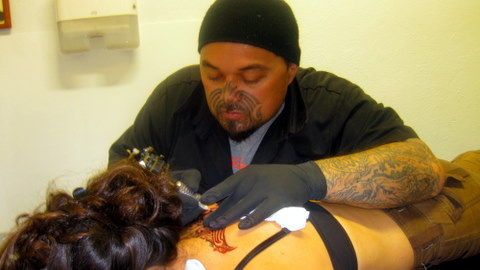
Moko et Cécile
Quoi qu'il en soit, dès mon retour, j'ai vu le nouveau tatouage de Cécile et, follement jaloux, je me suis mis en quête d'un artiste qui rendrait Moko insignifiant. Et j'ai trouvé: Paitangi. Quoi de mieux qu'une femme, en effet, pour rendre un homme insignifiant?
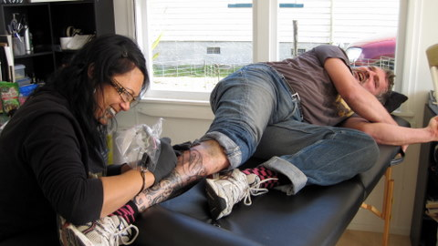
Paitangi et Eric, dit "l'ascète"
En outre, je pensais naïvement qu'une douce créature de dieu ne pouvait infliger les mêmes douleurs qu'une brute épaisse, fut-elle maorie. Grossière erreur. J'ai morflé. Comme d'hab. Enfin, ça y est. Thalou, tu vas être contente: nous sommes tous deux magnifiquement encrés.
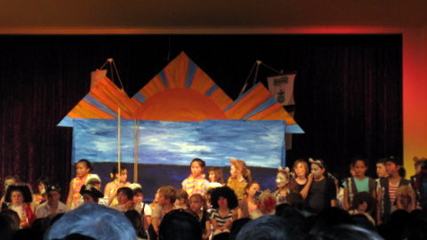
Notre nouveau jeu: trouver Sidney (si, si, il est sur la photo)
Après ces hauts faits d'arme, nous avons décidé d'aller assister à la pièce de théâtre de fin d'année de l'école primaire, où Sidney tenait le rôle d'un chimpanzé à ressorts. C'était assez sympathique, même si on ne m'ôtera pas de l'esprit que les enfants feraient mieux de faire des maths que du théâtre et des décors pendant les cours...
1 octobre 2011 - Que s'est-il vraiment passé?
Je vous avais prévenu: en juillet, Cécile et les enfants se sont surpassés. Pendant que je subissais les rigueurs de l'été belge sous une bonne polaire et un bon parapluie, ils n'ont rien trouvé de mieux qu'aller visiter le cap Reinga, méridion extrême de l'île fumante (c'est à dire le cap nord de la Nlle Zélande).
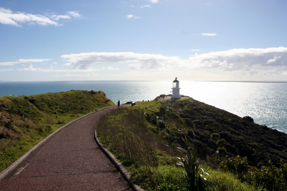
Le petit phare du bout du monde
Je ne peux pas leur en vouloir: Cécile voulait visiter ce phare depuis notre arrivée, alors que je préférais les geysers. Mais qu'importe, profitant d'un beau jour de soleil de cet hiver austral décidément fort clément, Cécile a pris le volant pour parcourir les 260 km qui séparent Reinga de Whangarei.
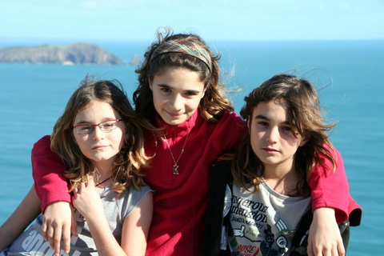
Les kids
En chemin, se rappelant des conseils de feue Christel, les enfants ont pu profiter d'une ballade en bus sur la fameuse 90 miles beach que nous avions déjà visité en décembre, avec feu Philippe, le pilote de rallye. Les chauffeurs ont vraisemblablement suivi une formation adéquate puisqu'ils ne se sont pas embourbés. J'y étais pas mais, au vu des photos, tout s'est bien passé et les enfants ont trouvé ça drôle.
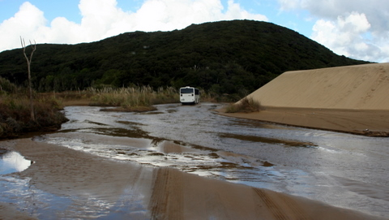
Le bus roule dans la rivière
Les enfants ont fait de la luge sur le sable des dunes puis se sont retrouvés avec leur maman adorée au même hôtel que nous avions déjà visité lors de notre trip d'arrivée. Selon Cécile, les enfants insistaient beaucoup pour retourner au même endroit que 8 mois plus tôt... Nostalgie, quand tu nous tiens...
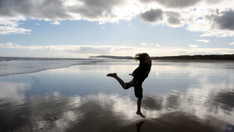
Sidney, aussi à l'aise en pas chassé qu'en shuffle
Comme je le disais, il suffit que j'ai le dos tourné pour que tout se passe bien. C'est à se demander si je sers à quelque chose dans ce voyage.
25 septembre 2011 - Que s'est-il passé?
C'est bien connu, dès qu'on a le dos tourné, les enfants en profitent pour faire des bêtises et la femme pour médire. J'étais donc circonspect en rentrant sur Let It Be après mon séjour en Europe.
De fait, je n'ai pas été déçu: profitant de mon absence, Cécile et les enfants n'ont rien trouvé de mieux que de décorer notre bateau en ornant ses flancs de signes aussi bizarres qu'intriguants. J'ai évidemment été séduit par cette nouvelle décoration qui rend notre navire encore plus unique, d'autant que j'étais monté à bord dans le noir, sans le remarquer, et que c'est seulement le lendemain, vers 6h du matin, alors que je m'apprêtais à aller me doucher sous la cascade gelée de Whangarei, après mon footing de 22 km dans l'arrière pays, que j'ai découvert le pot aux roses.
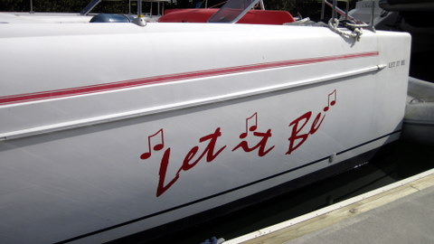
Let It Be, encore plus beau qu'avant !
Mais ce n'est pas tout: apprenant que Let It Be était désormais le plus beau bateau du port (ce qui, objectivement, n'est pas vrai: il l'était déjà avant cela mais maintenant plus personne ne le conteste), une foule nombreuse était venue admirer notre nef sur le ponton. Notre réputation est maintenant telle que même les dauphins remontent le fleuve pour venir nous admirer.
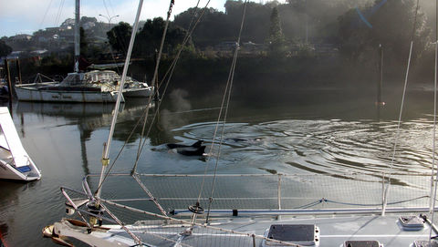
Les dauphins viennent nous voir au ponton
Comme Cécile parle couramment le dauphinol, elle a échangé quelques propos, expliquant notamment qu'on serait bientôt de retour au large, dès que les enfants auraient terminé leur année, qu'on aurait visité l'Australie, remplacé les moteurs, refait les coussins de pont et de carré et, surtout, obtenu notre 22ème visa de l'immigration locale. Rassurés, les dauphins sont repartis vers l'embouchure.
Tout cela s'est passé en Août. Bientôt, je vous raconterai ce que Cécile et les enfants ont fait en juillet, et je vous assure qu'il n'y a pas de quoi être fier...
24 septembre 2011 - Rugby 2011
Voilà plus de trois mois que j'étais loin des miens. J'ai décidé que c'en était trop et j'ai pris le premier avion pour Auckland, avec escale à Abu Dhabi, Singapour et Brisbane. Même pas peur. Enfin quand même un peu: quand je suis arrivé à Brisbane, j'ai entendu (comme tous le monde dans l'aéroport) une petite voix fluette dire "Mr Laurel (rien à faire, dans les pays anglosaxons, je suis le faire valoir de Hardy), please go to the transit desk immediately".
Bien qu'ayant plus de 30 heures de voyage dans les jambes à ce moment, j'étais encore assez alerte pour me rendre à ce rendez-vous mystérieux sans attendre. Et là, la préposée m'informa sans ambages que je ne pouvais prendre l'avion pour Auckland puisque je n'avais pas de billet de retour. Cornebleu, me dis-je, je suis fait, l'immigration néozélandaise a repéré en moi l'un de ces aventuriers qui prennent un aller simple vers leur pays dans l'espoir de s'y incruster et de profiter de leur couverture sociale. J'ai eu beau expliquer que j'étais arrivé chez eux en bateau et qu'en conséquence je quitterais le pays du grand nuage blanc (c'est l'autre nom de la Nouvelle Zélande) à bord de mon navire, rien n'y fit, j'ai dû acheter un billet retour, que je me suis fait rembourser une fois arrivé, non sans mal d'ailleurs...
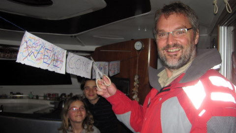
Monsieur le Ministre
Enfin, je suis finalement arrivé à Auckland après 36 heures et j'ai retrouvé ma très jolie femme et mes non moins jolis enfants, qui m'avaient préparé une surprise. En rentrant, j'ai donc, tel un ministre plénipotentiaire, inauguré le nouveau Let It Be (et je vous en reparlerai plus tard).
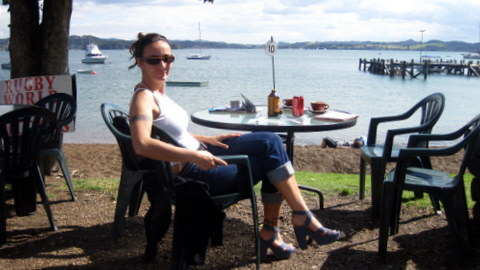
Printemps
Les retrouvailles furent magiques et émouvantes, un peu comme si j'étais parti depuis 3 mois. Nous nous sommes tous serrés les uns contre les autres, puis j'ai couvert mes enfants de cadeau et ma femme d'amour. Ensuite, nous sommes tous allés voir un match de rugby: Tonga contre Japon. Ce fut un grand moment de poésie et d'amitié virile, même s'il faut reconnaître que les Tongiens étaient nettement plus balèzes que les Japonais, lesquels comptaient dans leurs rangs un nombre suspicieux de John et même un dénommé Bob, dont le nom de famille sonnait plus comme Elwood que Takahashi. Mais bon, les petits Japonais n'ont pas démérité et se sont fait battre courageusement.
Madame la Princesse
Ecoeuré par tant de bestialité sauvage, j'ai décidé d'emmener ma douce et tendre épouse dans l'arrière pays, non sans quelques vilaines pensées en tête. Mais la douceur printanière de l'air du large calma mes vélléités libidineuses et c'est au bord de l'eau que nous avons passé quelques heures fort agréables, à Russell, et à deviser sur des sujets aussi divers que la Micronésie, le tatouage Maori et l'intérêt de disposer de moteurs de 55CV plutôt que 40...
Bref, je suis content d'être de retour au Kiwiland.
18 juin 2011 - La pelle
Un petit billet rapide pour m'excuser auprès des dizaines de personnes qui attendent leur livre. Suite à un petit cafouillage dans l'expédition en France, il est apparu que certains exemplaires ne présentaient pas la qualité requise pour un ouvrage de ce calibre. J'ai donc demandé à l'imprimeur de corriger le tir, ce qui se produit à l'instant même où j'écris ces lignes.
Je pense recevoir les livres 'recollés' d'ici une semaine. Je reprendrai les livraisons à ce moment.
Par ailleurs, si certains parmi vous ont déjà acquis le chef d'oeuvre et qu'il se délite, qu'ils n'hésitent pas à prendre contact avec moi, j'essaierai, dans la mesure de mes maigres moyens, de les satisfaire.
17 juin 2011 - I'll be back
Les plus perspicaces d'entre vous, et ceux qui m'ont vu récemment, l'auront deviné: le mutisme du bloc ne s'explique que par la grande activité dont a fait preuve la rédaction au cours des 4 dernières semaines. Pour être plus clair, l'accueil mitigé des autorités néo-zélandaises doublé du manque surprenant de réalisme de la part de mes ex-futurs employeurs m'a incité à accepter une mission en... Belgique !!
Eh oui. A l'heure où j'écris ces lignes, je suis rentré au pays pour quelques mois afin de travailler à la ville, abandonnant femme et enfants dans la grisaille de l'hiver austral. Si, si, c'est vrai. A mon corps défendant, je me suis résigné à entamer cette transhumance seul (il est vrai que les enfants se devaient de fréquenter assidûment l'école jusqu'à la fin de l'année, en décembre, et que leur maman ne pouvait décemment les abandonner, dans la grisaille de l'hiver austral, disais-je). Je suis de retour afin de régler quelques détaux administratifs et, par la même occasion, empocher les 4.000 francs de la case départ, cette dernière remarque n'étant pas totalement étrangère à ce choix tactique surprenant.
Rassurez-vous, le blog n'est pas mort même s'il ne bouge plus. Il fait semblant pour tromper l'adversaire et se réanimera périodiquement, avec une résurrection définitive prévue vers la fin de l'année. En effet, l'une des raisons de mon séjour en Belgique est d'amasser suffisamment de pièces d'or et d'électrum pour financer la deuxième partie du voyage, qui s'annonce encore plus palpitante que la première puisque nous parcourrons pas moins 240° de longitude dans les eaux picales, voire trop picales. A bientôt donc !!!
21 mai 2011 - Et voilà !!
Hier, ce fut le tour de Monkey Feet et Tyee de quitter la marina, emmenant avec eux les petits copains de Sidney. Il ne reste désormais que quelques bateaux de voyage. Dans quelques jours, le rude hiver néo-zélandais recouvrira le port d'un grand manteau blanc et la nuit polaire débutera, interminable. Seuls les plus résistants des marins survivront aux conditions impitoyables. Enfin, je m'emporte, il ne fera pas froid et il n'a jamais neigé, ni gelé, ici. Mais bon, ça faisait plus miséroïde comme ça.
En plus, nous venons de recevoir nos visas: travailleur pour moi, étudiant pour les enfants. Désormais, nous sommes pratiquement assimilés. Quel bonheur.
17 mai 2011 - Transhumance
De retour à la marina, nous avons retrouvé nos voisins de ponton, comme si nous étions partis depuis 5 ans et qu'on les connaissait depuis notre enfance. Nous nous sommes embrassés en nous congratulant mutuellement d'avoir surmonté tant d'épreuves et nous nous sommes promis de ne plus nous quitter.
Ensuite, Markus et Tina, de Blue Callaloo, sont partis. Sputnik, le petit catamaran jaune est parti. Nouvelle Vie, le gros catana, est parti. Inayana, le bateau des 4 filles du docteur Marsh, est parti. Pickles, le bateau des 'chapeaux à lunettes', est parti. Diaethyl, le bateau des alcooliques qui nous ont appris à brasser la bière, est parti. Bref, nous nous retrouvons pratiquement seuls, entourés de bateaux locaux hivernant.
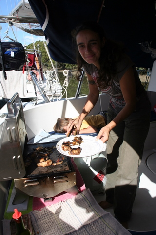
Barbecue sur Let It Be
Afin de supporter ces déchirures sans pleurnicher comme des mouettes, nous avons décidé de cuire quelques ailes de poulet au barbecue car, malgré l'automne déjà bien avancé, la température au soleil reste fort agréable. Au passage, vous noterez que nous sommes désormais équipés d'un BBQ kiwi, au gaz, qui permet de faire des fristouilles en un clin d'oeil, sans faire plein de crasses dans tout le bateau.
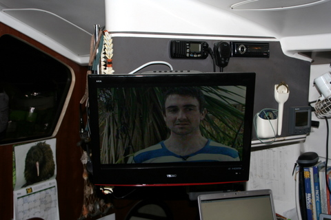
Notre nouvelle télévision
Les enfants sont retournés à l'école après les congés de Pâques et nous sommes revenus à nos occupations favorites: attendre les papiers de l'immigration et aménager notre intérieur pour le rendre encore plus cosy. Cette fois, nous avons décidé d'améliorer notre 'sound system' en y incluant un nouvel ampli et une petite TV 12V que j'ai installée sur un bras articulé. Dorénavant, on peut regarder les nouvelles sur la chaîne publique néo-zélandaise. Figurez-vous que, dès notre premier journal télévisé (depuis 2 ans), nous avons été abasourdis d'apprendre qu'un nouvel incident avait eu lieu entre les Fidji et les Tonga, ces derniers n'hésitant pas à pénétrer dans les eaux fidjiennes pour s'y livrer à des actes dont l'audace n'a d'égale que la forfaiture.
Ca nous a rassurés: les infos sont aussi captivantes ici que chez nous.
12 mai 2011 - Fin des travaux, roulez prudemment
Après une dernière journée épouvantable où la pluie n'a cessé de fouetter le pont sous des bourrasques de vent, un jour nouveau s'est levé pour faire honneur à notre remise à l'eau. Comme souvent en Nlle Zélande, le contraste entre la tempête d'hier et le calme radieux d'aujourd'hui nous a semblé presque surnaturel.
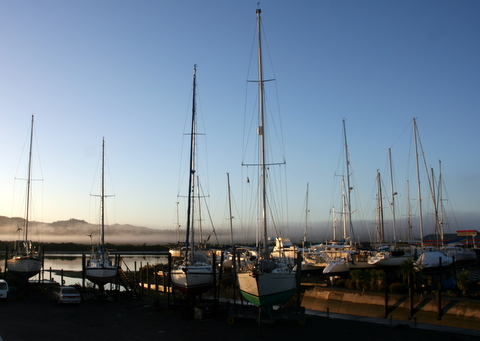
Le jour se lève sur Norsand
Mais cela ne nous a pas empêché de préparer le bateau pour le grand saut: Cécile a achevé la remise à neuf des oeuvres vives tandis que je terminais la pose des plaques d'inox qui protègent la coque des remontées intempestives de l'ancre. Ensuite, le chariot élévateur a délicatement soulevé les 12T de LET IT BE pour le conduire sur la rampe. Sans mentir, il a fière allure notre navire: 16 jours de travail intense ont porté leurs fruits.
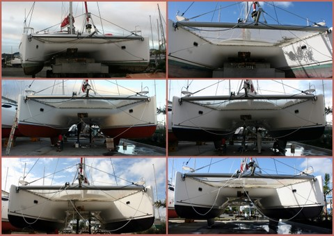
Evolution de la coque au cours de notre séjour au sec
Comme on le voit, les coques ont viré du verdâtre emmolusqué à un très beau noir, sobre et net, en passant par un orange très apaisant. Vraiment, Cécile a fait un boulot d'anthologie. Et quand on sait qu'elle était atteinte d'un lumbago particulièrement pernicieux, on ne peut que s'incliner devant tant d'audace et de pugnacité.
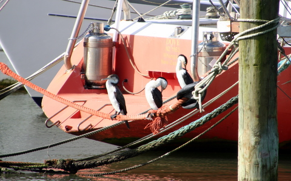
Les cormorans ne nous regardent pas passer
La remise à l'eau fut un succès étourdissant, des milliers de fans se pressant sur la jetée pour voir LET IT BE faire ses premiers gargouillis. Nous avons majestueusement mis le cap sur la marina où nous avons retrouvé notre place d'avant et tout est rentré dans l'ordre, comme si cette parenthèse technique n'avait jamais eu lieu. Maintenant je n'ai plus qu'à recevoir mon visa de l'immigration et je pourrai travailler dans la joie et l'allégresse.
10 mai 2011 - On finalise
Voilà, nos vacances à Norsand touchent à leur fin. On s'est bien amusé, on a bien poncé, peint et vissé mais maintenant il nous faut revenir sur la mer ferme.
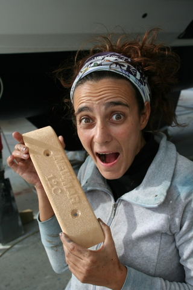
Cécile reçoit un lingot d'or pour sa performance
A force de s'activer sous le bateau depuis deux semaines, qu'il pleuve, qu'il vente ou qu'il soleille, Cécile a attiré l'attention des plus hautes autorités maritimes kiwies. Aujourd'hui, elle a reçu un lingot d'or comme récompense pour tant de labeur.
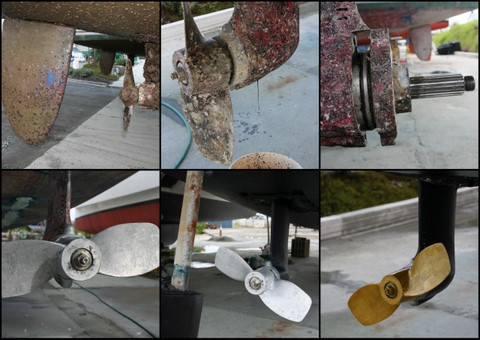
Evolution de l'hélice au cours de notre séjour au sec
En fait, ce lingot d'or n'est pas un lingot et n'est pas en or... Non, non, c'est du bronze et c'est un plaque de masse que nous avons fixée sous le bateau. Elle nous servira pour la future radio BLU que nous installerons peut-être un jour. Pour le reste, nous sommes pratiquement prêts: aujourd'hui, on a fini l'enduisage des hélices avec du silicone, gage de propreté pour les prochains mois. Enfin, on verra!
8 mai 2011 - On peint
Après avoir recouvert les coques d'une couche orange destinée à faire adhérer la couche suivante, nous avons entamé la mise en peinture définitive, en noir comme il se doit. Cette ultime couche devrait protéger notre bâtiment durant au moins un an, c'est-à-dire jusqu'à ce qu'on ressorte le bateau de l'eau, pour recommencer ce même petit toilettage.
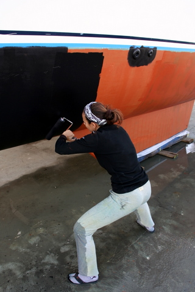
Cécile, très assidue
Certains parmi vous se disent sûrement: "Un bateau, c'est pas fait pour être sur l'eau?". De fait, la vie en bateau sur terre pose quelques problèmes, comme, par exemple, la montée à bord. A moins de disposer d'une très bonne détente, il est difficile d'accéder aux jupes arrière qui se situent à 180 cm du sol. Il faut donc emprunter une échelle pour monter et descendre du bateau. Autre problème: celui des eaux usées. Au mouillage, oserais-je l'avouer?, nous rejetons toutes nos eaux dans la mer. Sur notre socle en béton, ce serait pousser le bouchon un peu loin. Voilà pourquoi, su la photo ci-dessous, vous voyez des tuyaux reliant LET IT BE à des bidons.
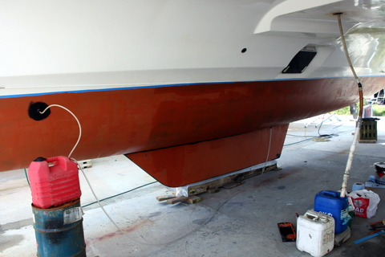
L'envers du décors, sous LET IT BE
Tous les jours, les eaux de vaisselle finissent dans le bidon et je me charge de le porter à la fosse. Soit, mais pour les toilettes? Eh bien c'est simple: on se retient jusqu'à ce qu'on soit à la marina (parcours d'environ 200m mais dont la longueur perçue dépend de l'état d'urgence de la commission). Evidemment, si l'envie vous surprend au milieu de la nuit, il existe des seaux pour les urgences). Enfin, pour vivre heureux, il convient d'avoir un frigo, qui, dans notre cas, est refroidi en partie par l'eau de mer. C'est la raison pour laquelle j'ai installé un circuit fermé à l'aide de 2 tuyaux et d'un bidon rouge (pour faire croire au frigo qu'on est dans l'eau).
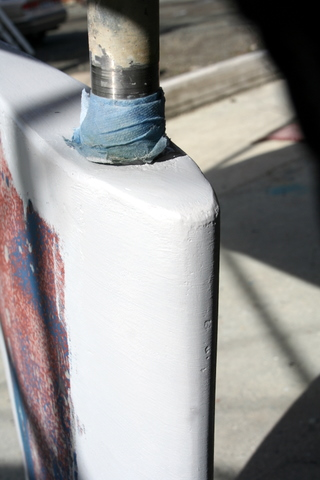
Le safran réparé: il est comme neuf
Pendant que Cécile continue à peindre, je parfais ma formation de sculpteur à l'époxy. Après le safran tribord, j'ai décidé de m'attaquer aux trous dans la nacelle provoqués par les (rares) remontées d'ancre trop rapides (l'ancre monte et fait 'bong' contre la coque). Ensuite, il ne restera plus qu'à laver les oeuvres mortes (au-dessus de l'eau), mettre une plaque de masse sous la coque pour la radio BLU et enduire les hélices de silicone. On pourra dès lors replonger LET IT BE dans l'eau, si la météo nous le permet.
7 mai 2011 - La vie au sec
Voilà près de 10 jours que nous trônons au sec, au milieu du chantier. C'est une nouvelle expérience pour nous et, n'était la présence de nombreuses connaissances et amis, nous serions un peu perdus. En effet, sont également en chantier nos bons amis de Blue Callaloo, Léo et Yaz qui ont démâté Selah, Patrick et Vivianne de la Joline, sans compter les autres Solar Planet que nous avions croisés à Rarotonga et Gunther que nous avions salué aux Fidji. C'est l'effervescence avant le grand départ pour les tropiques.
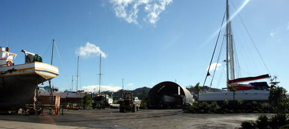
Le chantier (LET IT BE à droite)
Malgré le caractère un peu industriel du décor et la constante occupation des parents, les enfants laissés à eux-mêmes s'organisent pour inventer des jeux passionnants. Il faut dire que le chantier regorge de coins reculés, comme par exemple, la zone des conteneurs où l'on peut jouer à cache-cache pendant des heures. Les 3 "Let It Be" y retrouvent les 3 "Joline" et parfois les 3 "Division II" pour s'amuser comme des fous.
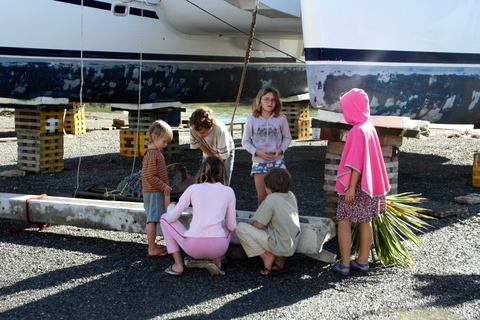
Les enfants et leur élevage d'escargots
En plus, le chantier est vaste et il n'y circule que peu de voitures, ce qui en fait un excellent terrain pour s'exercer aux cascades en vélo ou à la chasse aux escargots. Les enfants passent des heures à explorer le chantier.
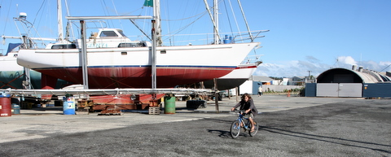
Sidney, roi du vélo
Pendant que les enfants s'amusent, les parents bossent. J'ai fini d'enduire le safran après l'avoir recouvert de fibre de verre et je me suis attaqué aux éclats des étraves. Pendant ce temps, Cécile a commencé une tâche longue et pénible: la peinture du bateau avec le primaire pour l'antifouling (c'est la peinture orange qui est supposée améliorer l'adhérence de la couche de peinture finale).
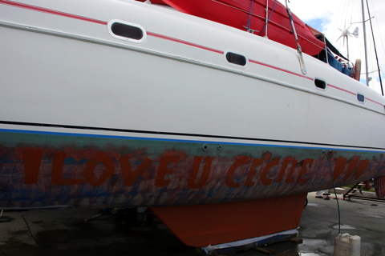
Dès que Cécile a le dos tourné, Eric fait des bêtises
A l'heure où j'écris ces lignes, nous venons de terminer la couche de primaire. Youpie !!!
5 mai 2011 - On ponce toujours
Après une semaine, nous pensions en avoir fini avec le ponçage. J'avais meulé toutes les imperfections de surface des quillons et des safrans pendant que Cécile ponçait avec une frénésie typiquement féminine sous les coques, même lorsque la tempête faisait rage et que personne n'osait s'aventurer dehors. J'avais rebouché les trous à l'époxy avant de leur infliger un traitement de surface à nivellement intégré. Cécile avait passé la première couche de primaire époxy sur les parties sensibles de la coque pendant que je passais la première couche de primaire tout-court sur les zones les plus endommagées.
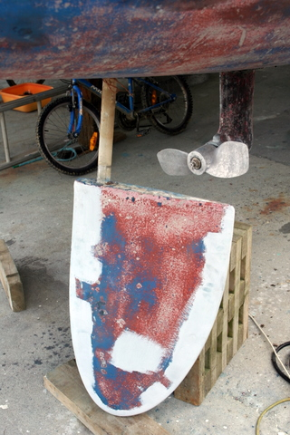
Le safran fêlé
Et patatras, en enduisant le bord d'attaque du safran tribord, Cécile s'aperçut qu'il fuyait: de petites gouttes perlaient à sa surface, comme issues d'une source mystérieuse. Après inspection, Cécile me confirma que le safran était fêlé sur 10 cm et que l'eau en suintait. Renseignement pris, il nous apparu clairement que cette fissure devait être comblée et le safran renforcé car "c'est une pièce très importante du bateau".
Eric meule, presque comme la vache
J'étais plein d'enthousiasme en allant chercher Patrick, notre voisin et accessoirement un charpentier de marine professionnel, pour lui demander son avis. C'est marrant d'ailleurs car nous avions croisé Patrick pour la première fois aux Marquises, il y a plus d'un an. Il vint se pencher sur mon safran et me dit: "Bof, c'est rien. Tu baisses ton safran, tu meules la fêlure, tu enlèves le gel-coat et un mm de strate sur une longueur de vingt cm pour pouvoir mettre un renfort en fibre de verre, ensuite tu mets 2 ou 3 couches d'enduit en ponçant entre chacune, tu mets une couche de primaire et puis tu termines avec l'anti-fouling". J'étais anéanti, moi qui croyait régler le problème en un clin d’œil. J'ai préféré laisser mon enthousiasme chez Patrick et je suis revenu pleurer sur mon bateau.
La préparation de surface est achevée
Mais je ne suis pas homme à me laisser abattre sans lutter. J'ai donc décidé, malgré l'avis de Léo qui me conseillait de faire appel à de la main d'oeuvre qualifiée, de me lancer dans l'aventure. Premièrement: abaisser le safran. Piece of cake, il suffit de dévisser 2 ou 3 boulons et zou, le safran choit. Deuxièmement, meuler la fissure et les bords du safran. Pas de problème, il suffit d'avoir une meuleuse et du P36 (c'est la granulométrie du papier de verre). Ensuite, on fait beaucoup de bruit et de poussière. Troisièmement, la réparation elle-même.
Et là, les choses se compliquent. Les amateurs quittent le jeu. Place aux pros. Il faut de la fibre de verre, une résine (bi-composant si l'on est sérieux car les résines mono-composant, c'est pour les amateurs, voire les marins d'eau douce) et de la charge. Inutile de préciser que pour ce type de réparation, la meilleure fibre de verre est la fameuse tri-axiale, solide dans tous les sens. Pas besoin non plus d'indiquer que le meilleur bi-composant pour ce type de réparation est la résine époxy (et non la résine polyester, erreur typique du débutant).
On place le tissus de verre
Pour la charge, rien de tel que les microfibres. J'ai naivement proposé à Patrick d'utiliser des minifibres (qu'on m'avait conseillé d'acheter en Martinique avant le départ) mais sa réaction a été claire: "Quoi? Des minifibres? Non, non, c'est impossible. Il faut des microfibres, sinon ton safran sera structurellement faible et les grandes forces auxquelles il est soumis auront tôt fait de l'éventrer, ce qui mènera inéluctablement à la perte de ton navire. Et toi avec." Oups... Pas de minifibres donc. Mais pourrais-je utiliser des microsphères? Hein? Eh bien non, car les microsphères, c'est bien, mais trop tendre pour les fêlures dans les safrans. Et la silice colloïdale (j'en avais aussi dans mon garde-manger)? Que nenni, ça ne convient pas (mais pour d'obscures raisons, il faut bien le dire).
Quant à l'enduit qui s'intercale entre la fibre et la couche de primaire, il convient de ne pas trop le charger. Ensuite, il est bon de terminer par une peinture antifouling qui tiendra éloignées toutes les bêbêtes qui veulent s'incruster. Par contre, avec l'antifouling, il faut rester attentif: les sail drives sont en aluminium, sur lequel on ne peut pas mettre le même antifouling que sur les coques car ils rouilleraient. Mais attention: l'antifouling pour aluminium ne peut pas se mettre sur l'aluminium lui-même, il faut bien sûr d'abord étendre un primaire spécial aluminium. Tous le monde sait ça. Quant aux hélices, bien qu'étant en aluminium, elles sont mieux protégées par un composant à base de silicone, à condition de ne pas y mettre les doigts.
Bref, aujourd'hui, j'ai enfin compris pourquoi les étalages des magasins de peinture fleurissent de milliards de produits: il y a un revêtement pour chaque combinaison de surface-situation-température-réparation-pointure de l'artisan. La seule chose que tous ces trucs ont en commun, c'est l'exhorbitance de leur prix, à croire qu'ils mettent du carbure de tungstène dans leurs mixtures.
Petit détail pour les curieux: la tenue NBC (Nucléaire-Bactériologique-Chimique) est de rigueur quand on travaille avec la fibre de verre. Sans elle, des tas de petits morceaux de verre viennent se loger à la surface de la peau, occasionnant des microblessures qui démangent diaboliquement pendant des heures. C'est un vrai calvaire.
30 avril 2011 - On ponce encore, surtout Cécile
Nos 2 travaux d'Hercule consistent à repeindre les coques et à changer les joints d'embase. Dans le billet précédent, je vous décrivais comment Cécile avait réussi à poncer les coques en moins de 24h. Mais je vous avais caché que pendant ce temps, j'avais fait appel à un mécano pour extraire l'axe de rotation des hélices (et, de la sorte, déterminer l'origine de la fuite ayant provoqué l'afflux d'eau dans nos embases).
On enlève l'axe de l'hélice
Le mécano a fait son travail et, après inspection, a conclu qu'il y avait du jeu dans les pignons, et qu'en conséquence, il fallait remplacer les sail drives, car le roulement assurant la stabilité de l'axe vertical ne peut se changer qu'à Auckland, par le fabricant, et que gnagnagna et gnignigni, etc. Bref, 15.000$ au bas mot. Un peu décontenancé, je scrutai le visage un rien bouffi du monsieur, avant d'affirmer: "Je n'ai pas 15.000$". Sur ce, le mécano m'expliqua que l'eau ayant séjourné depuis trrrès longtemps dans mes embases, elle avait tout endommagé et qu'il était hors de question de remonter les embases sans faire cette réparation et que, si tel était le cas, je ne ferais pas plus de 5 miles avant de casser mes sails drives. J'ai habilement rétorqué: "Good point. But I don't have 15.000$", en pensant que si j'étais parvenu à traverser le Pacifique avec de l'eau dans mes embases, je parviendrais bien à traverser l'océan Indien avec de l'huile et de nouveaux joints.
L'hélice, avant et après
Nonobstant, le monsieur est reparti avec mes roulements et je me suis acharné sur les hélices, pour me passer les nerfs. Ensuite, la dépression tropicale annoncée est arrivée, apportant bourrasques et précipitations. Contrairement à Cécile qui a probablement eu un ancêtre breton, j'ai piteusement rejoint le carré. Pendant ce temps, ma douce moitié s'activait sous le bateau afin de parfaire le ponçage des coques et de blanchir la nacelle.
Le livre du siècle, enfin disponible
Malgré les conditions dantesques de ce début d'hiver, la poste continue à faire son travail. Nous avons reçu aujourd'hui les 5 exemplaires du livre de nos aventures et c'est avec soulagement que nous avons constaté que la mise en page était conforme à nos directives et que les photos rendaient impeccablement. Si je ne l'avais pas écrit, j'en ferais bien acquisition. Rien qu'à lire le titre, on sait à quoi s'en tenir. Vraiment du bel ouvrage. A ce sujet, n'oubliez pas de vous rendre sur la home page du site afin de commander le vôtre.
27 avril 2011 - On ponce
Une fois le bateau hors de l'eau, on peut à loisir en faire le tour, observer les coques, inspecter les coins, scruter les recoins et fureter aux alentours.
LET IT BE sur son socle de béton
Toutes ces observations anguleuses ne doivent pas nous détourner de notre droit chemin: si nous avons sorti le bateau de l'eau, c'est pour repeindre les oeuvres vives et remplacer les joints spi des embases. Je vous passe le détail, mais, en gros, il faut enduire les coques d'une substance maléfique, propre à repousser mollusques et crustacés mais bonne pour l'environnement. Bien sûr, et demain les impôts vont diminuer.
Cécile ponce
Comme le catamaran reposera bientôt sur ses quillons (c'est le truc derrière Cécile sur la photo ci-dessus), il est recommandé de les peindre rapidement. Cette tâche ingrate ne convient pas aux vieillards ventripotents, c'est pourquoi j'ai magnanimement accepté que Cécile s'en occupe.
L'embase dégouline
Dès que j'ai eu vérifié la bonne qualité du travail de Cécile, je me suis attelé à une tâche d'un grand intérêt: la vidange d'huile des embases (en gros, ça consiste à s'énerver durant 45 minutes sous chaque coque, en essayant de dévisser un boulon qui libère l'huile contenue dans la transmission du moteur). Comme le cata repose sur ses quillons, chaque opération menée sous ses coques relève de la contorsion et se termine généralement par un BONG, quand on se relève en oubliant que les coques surplombent les hélices et qu'à moins de mesurer 80cm, on ne peut se déplier sans un minimum de précautions.
Cécile vient d'une autre planète, c'est sûr
Après avoir copieusement insulté les embases et leurs écrous grippés, j'ai constaté que Cécile ne peignait plus. Effectivement, s'emparant de la ponceuse orbitale à axe décentré, elle s'acharnait maintenant sur les coques, bien décidée à les mettre au pas. Croyez-moi si vous le voulez mais elle a passé ainsi près de 10 heures à poncer (dans un vacarme assourdissant puisque qu'ici, on ne plaisante pas avec l'écologie et, étant donné le caractère un rien toxique des peintures de coques, il est interdit de poncer sans aspirateur).
26 avril 2011 - On sort de l'eau
En principe, on doit sortir le bateau de l'eau tous les ans, afin de lui refaire une beauté et de le nettoyer en profondeur, y compris entre les quillons. Et surtout, il faut lui enduire les coques de peinture corrosive afin de prévenir la prolifération d'un biotope envahissant, très prolifique dans les eaux tropicales.
LET IT BE à l'approche.
En ce qui nous concerne, nous avions habilement esquivé Panama, car nous étions trop pressés, puis Tahiti, car les services étaient hors de prix. Il nous restait donc la Nouvelle Zélande pour sortir notre bateau de l'eau. Pour ce faire, nous avons opté pour une technique qui a fait ses preuves: vous prenez rendez-vous avec un chantier pourvu d'une rampe inclinée. Vous vous y rendez à marée haute. Vous immobilisez le bateau grâce à quelques amarres bien placées. Vous placez un chariot en-dessous du bateau et vous attendez. Normalement, après la marée haute, vient la marée basse. Et, grâce à cette baisse providentielle du niveau de la mer, vous vous posez gentiment sur le chariot. Il n'y a plus qu'à libérer les amarres et retirer le chariot et vous voilà au sec !!!
LET IT BE émerge
La dernière sortie remontant à octobre 2008, nous étions un peu inquiets à l'idée de découvrir nos coques corrodées par près de 30 mois d'eau salée et chaude. Même si nous avons pris soin de régulièrement 'gratter' les coques lors de nos croisières tropicales, les 5 derniers mois passés en Nlle Zélande nous portaient à craindre quelque croissance intempestive de mollusques collants.
Détail de la poupe tribord
De fait, notre coque, et surtout nos sail drives (ce sont les trucs auxquels sont attachées les hélices) étaient assez bien peuplés, tant et si bien que nous avons envisagé un court instant de préparer un vongole avec tous ces crustacés.
Eric au travail
Mais non. Dès que LET IT BE fut au repos, posé sur le chariot qui avait servi à l'extraire de l'eau, nous sommes descendus à terre et, profitant du fait que les coques étaient encore humides, nous nous mîmes, sans attendre, à gratter les coquillages.
La famille LARUEL au grattage
Même les enfants étaient de la partie. C'est seulement quand la nuit fut tombée que nous pûmes enfin jouir d'un repos bien mérité, tant est dure la vie de marin.
20 avril 2011 - Damned! I'm done like a rat
Quand nous sommes arrivés en NZ, nous caressions un projet simple et, du moins le pensions-nous, facile à mettre en oeuvre. Nous voulions mettre nos enfants pendant un an à l'école locale, de sorte qu'ils fréquentent des jeunes gens de leur âge et qu'ils apprennent la langue de Shakespeare.
A priori, on se disait aussi que tant qu'à être sur place, autant travailler un peu (d'autant que nos qualifications et expérience nous placent dans la catégorie des 'Essential Skills' dont a besoin le pays - enfin, en tous cas, c'est ce qu'ils disent). Bref, nous pensions un peu naïvement qu'il serait aisé de rester 18 mois en NZ. Grave erreur.
Il ne suffit pas d'être hautement qualifié et d'avoir trouvé un boulot parmi les mieux payés de NZ (pour rappel, j'ai signé à $132k par an), ce qui, soit dit en passant, assure aussi les meilleurs impôts au pays.

Les salaires en NZ.
Il ne suffit pas de mettre ses enfants à l'école, et de témoigner par là notre intérêt pour la culture locale.
Il ne suffit pas d'avoir dépensé plus de 10.000$ pour visiter le pays.
Il ne suffit pas de faire travailler les locaux en faisant appel à la main d'oeuvre qualifiée (et onéreuse) pour réparer le bateau.
Il ne suffit pas de payer des frais de port, de marina, de douane, de visas, etc.
Il ne suffit pas de réunir une tonne de documents plus certifiés les uns que les autres.
Encore faut-il être en bonne santé...
Et là, malheureusement, fini de rigoler. Après 2 semaines d'attente, nous venons de recevoir une lettre de l'immigration nous indiquant que mon examen sanguin leur inspire quelque appréhension. Ils doivent faire appel à un avis médical pour en savoir plus car 'ils ne peuvent prendre aucun risque' - on ne sait jamais, je pourrais être porteur d'un virus contagieux, propre à infecter les pauvres insulaires si bien portants. C'est curieux d'ailleurs, car le médecin 'certifié' qui m'a fait passer les tests m'a confirmé que tout était OK. En plus, je postule pour travailler comme consultant en informatique, pas comme réparateur de centrale nucléaire.
Après investigation (et pas moins de 44 minutes au téléphone), l'immigration néo-zélandaise a bien voulu me faire part de leur sujet d'inquiétude: mon taux de cholestérol est 0,1g au-dessus des limites qu'il ont fixées. Damned! I am done like a rat ! Je serais venu ici dans l'espoir de tomber malade afin de ruiner leur système de santé qu'ils n'en seraient pas plus étonnés. Le pays compte plus de 20% d'obèses et occupe la 7ème place mondiale dans ce triste classement (c'est pas moi qui le dit), mais les autorités sont conscientes du problème: autoriser un mec qui dépasse la limite en cholestérol à travailler pendant quelques années, ce serait trop dangereux.

La NZ, gros oui, gras non.
Bref, tout cela nécessite quelques éclaircissements et, probablement, des examens complémentaires. Je ne serais pas surpris qu'on me suggère un toucher rectal, histoire d'être bien sûr que j'aime me faire entuber. Vraiment, la NZ est une terre d'accueil. Peut-être plus pour mon argent que pour ma famille mais bon... Bref, si tout va bien, j'aurai mon visa de travail quand je serai parti depuis 6 mois...
A part ça, pour ceux que ça intéresse, nous avons découvert de l'eau dans les embases des deux moteurs, ce qui nous oblige à sortir le bateau de l'eau. Et la vie suit son cours, assez insipide pour que l'inspiration vienne à me manquer.
7 avril 2011 - Le triathlon de Syr Daria
Tel père, telle fille. Aujourd'hui, Syr Daria avait rendez-vous avec le sport à la Whangarei Primary School: comme tous les enfants de son âge, elle avait un programme sérieux à l'ordre du jour: une largeur de natation, un tour de l'école en courant, puis un parcours multi-sports dans la cour de récré et, surtout, une glace à la fin.
Syr Daria nage, court, saute et lance.
Le plus dur, nous confia-t-elle après l'épreuve, est d'attendre au bord de la piscine en maillot puis de plonger dans l'eau glacée (la piscine est non chauffée et à l'extérieur). Et le mieux? C'est la glace, évidemment!
Sidney et sa bande d'idiots.
Après avoir assisté au triathlon de Syr Daria, nous sommes allés saluer Sidney. Nous avons pu prendre une photo de classe improvisée mais fort sympathique.
Well done, kids !!!
1 avril 2011 - Cécile a trouvé le poisson
Nous sommes immobiles, à quai, depuis près de 4 mois, bercés par la marée et le ressac du fleuve qui baigne la marina. Au bout d'un moment, les hélices s'encrassent, ce qui nuit à la manoeuvrabilité du bateau et, si l'on n'y prend pas garde, on finit comme le dernier cata qui a quitté son emplacement: échoué dans la mangrove.
Cécile plonge sous la coque (on voit déjà l'anguille)
Pour éviter cette infâmie, il convient de nettoyer les pales de l'hélice en les grattant avec une petite spatule métallique. En temps normal, c'est moi qui me charge de cette besogne ingrate. Cependant, ici, les eaux du fleuve sont froides et sombres, ce qui m'a incité à gentiment proposer à Cécile de le faire à ma place.
Le poisson d'avril
Comme elle a peur que je lui mette une volée en cas de refus, Cécile a accepté de plonger dans les eaux troubles. A peine eut-elle immergé ses petites jambes fluettes qu'elle émit un grand cri: une anguille de belle taille venait de lui mordre le mollet. Nonobstant, elle a quand même plongé et enlevé 5 cm d'algues le long des pales, ce qui nous permettra de diriger le bateau, quand nous quitterons le quai. Bravo Cécile !!!
23 mars 2011 - La météo à Whangarei
Le climat néo-zélandais, en tous cas pour ce qui est de Whangarei, est assez clément, si l'on en juge par les 4 mois que nous venons d'y passer. Evidemment, c'était l'été et je ne doute pas que lorsque les rigueurs de l'hiver provoqueront le gel des eaux du fleuve et que les coques de LET IT BE seront broyées par la banquise, je formulerai un rectificatif au présent billet.
La météo des 30 derniers jours.
Comme on le constate ci-dessus, les 30 derniers jours ne furent pas désagréables, avec un maximum à 28°C et un minimum autour de 10°C. Il n'a pas beaucoup plu (à part avant-hier quand j'avais demandé de la pluie pour pouvoir récupérer de l'eau pour ma bière).
Les moyennes
Et comme je suis d'un naturel curieux, j'ai aussi demandé un diagramme des moyennes, ce qui m'a permis de constater que la température maximum moyenne était de 19°C en plein hiver, ce qui veut dire que même durant le mois le plus froid, il y a au moins un jour où la température devrait atteindre 19°C pendant la journée. Autre élément réconfortant: il ne gèle jamais, même si nous aurons quelques nuits fraîches à supporter, blottis au fond de nos couettes.
21 mars 2011 - Que se passe-t-il?
Depuis 2 ans, je m'efforce de publier un billet tous les 3 jours. Même quand on traversait le Pacifique, quand nous avions des visiteurs, quand nous étions menacés par des tsunamis, quand il n'y avait pas Internet, quand il pleuvait, bref, en toutes circonstances, vous, mes fidèles lecteurs, pouviez lire quelques lignes de ma plus subtile prose. Or, voici 2 semaines que je n'ai plus écrit. Que se passe-t-il donc?
Rien, en fait. J'ai signé mon contrat de travail par lequel je m'engage à enrichir les actionnaires au détriment de ma santé (mentale surtout). Cet évènement, que pourtant j'avais sciemment engendré, m'a mis le moral dans les chaussettes (que j'ai dû revêtir pour l'occasion). J'ai erré, sans but et sans repère, sur le ponton grisâtre en me demandant comment j'avais pu tomber si bas: à 44 ans, retourner travailler... Quelle misère.
Le kids triathlon.
Pendant ce temps, les enfants font des progrès sensibles en anglais et, si tout va bien, ils parleront mieux que nous d'ici peu. Ils continuent à pratiquer des activités variées pendant les heures de cours. A titre d'exemple, Kenya vient de terminer son crochet Maori qu'elle a sculpté de ses blanches mains au 'wood', c'est-à-dire le cours de bois. Syr Daria, quant à elle, se prépare pour le triathlon de son école tandis que nous sommes tous allés supporter les petits copains de Sidney qui s'étaient donné rendez-vous à la plage pour le Northland'Kids Triathlon.
Quant à moi, j'ai convaincu Cécile de de m'aider à assouvir ma nouvelle passion: la brasserie. Après 2 ans de fermentation libre avec des bananes, des ananas et des citrons, j'ai décidé de me lancer dans la bière (je veux dire dans la fabrication de bière, bien sûr). Il se fait que la Nlle Zélande présente une particularité intéressante à ce sujet: il est parfaitement légal de brasser pour son propre compte (et même de distiller, ce que je vais m'empresser de faire dans les semaines qui viennent).
La fabrication de la bière
Dans toutes les grandes surfaces, vous trouvez des 'sirops' que vous pouvez diluer dans de l'eau de pluie en y ajoutant de la levure prévue à cet effet. Vous mélangez le tout dans un fermenteur de 23L muni d'un petit bulleur et entouré d'un isolant thermique qui maintient la température autour de 21°C. Vous laissez reposer pendant quelques jours en écoutant les blublub blub. Ensuite, vous prenez les 20L supérieurs que vous embouteillez, en ayant pris soin de mettre quelques grammes de sucre dans chaque bouteille. Vous scellez les bouteilles en attendant la deuxième fermentation et, après 2 semaines, vous avez 20L d'excellente bière qui vous revient beaucoup moins cher qu'au magasin. C'est pas bioutifoul, ça?
10 mars 2011 - Nlle Zélande, terre d'accueil
Il en est parmi vous qui rêvent d'antipode, qui croient que la terre promise est forcément loin, qui pensent qu'on les attend comme le messie, qui supposent que la vie est plus clémente à l'autre bout du monde, qui supputent que l'or coule dans les rivières kiwies, qui conjecturent qu'un pays abritant plus de moutons que d'habitants ne peut qu'être accueillant. Eh bien détrompez-vous!
Depuis 6 semaines, nous affrontons l'immigration néo-zélandaise à coup de formulaires et de certificats, et je peux vous affirmer que nous ne sommes pas les bienvenus, en tous cas, si nous le sommes, ce n'est pas évident au premier coup d'oeil.
Cécile doute.
En arrivant, nous avons reçu, comme tous les touristes, un visa de 3 mois. Au terme de ce trimestre, nous avons décidé de renouveler ce visa, ce qui nous coûta 140$. A ce moment, nous ne pouvions guère nous douter qu'il s'agissait d'une petite mise en jambe.
En effet, les enfants se plaisent à l'école (pour laquelle nous avions déboursé pas moins de 7.000$ pour un trimestre). Hélas, pour qu'ils puissent poursuivre, il leur faut un visa d'étudiant, ce qui signifie un examen médical pour chacun d'entre eux (soit 20 pages de questions à remplir et 250$ par tête) et une radiographie des poumons pour Kenya (125$), en plus du visa lui-même, soit 220$ par personne. Il faut en plus démontrer que l'on a suffisamment d'argent pour vivre en Nlle Zélande (ce qui veut dire imprimer des extraits de comptes).
J'aime sponsoriser l'école kiwie. Mais les meilleures plaisanteries ont une fin. Aussi, pour bénéficier de la gratuité des cours, ai-je décidé de proposer ma candidature à un visa de travail, accompagné d'un visa de partenaire pour ma tendre. Je ne vous passe pas les détails car c'est assez somptueux.
Eric s'interroge
Or donc, pour obtenir un permis de travail en NZ, il faut: une copie de votre contrat de travail en Nlle Zélande (ce qui n'est pas évident à obtenir si vous n'avez pas de permis de travail - vous me suivez?), un certificat de réussite des études universitaires (le cas échéant mais, de toutes façons, si vous n'en n'avez pas, c'est même pas la peine de tenter votre chance), un certificat d'employé émanant de vos 3 derniers employeurs, un extrait de casier judiciaire, un certificat de mariage ou équivalent, un certificat médical comprenant un questionnaire d'une vingtaine de pages, une analyse d'urine, de sang et une radiographie des poumons. Evidemment, les autorités locales ne maîtrisent qu'approximativement la langue de Voltaire. Donc il faut leur transmettre une photocopie certifiée des originaux ainsi qu'une traduction certifiée elle aussi. En clair, vous devez vous rendre chez un traducteur assermenté avec vos documents, ensuite à la mairie pour faire des photocopies certifiées. A l'heure où je vous parle, on a déjà dépensé près de 3000$ pour nos visas. Et on ne les a pas encore...
7 mars 2011 - La marina
Voici 3 mois que nous sommes à quai, à Whangarei. La marina est située sur un fleuve, assez loin de l'embouchure, presqu'au centre de la ville. Comme Whangarei n'est pas une mégalopole, notre bateau se trouve également à 200m d'un supermarché et à moins de 10 minutes à pied du centre piétonnier où se trouvent tous les magasins et les restaurants.
Le quai des catas.
La marina offre tous le confort dont on puisse rêver: eau et électricité à profusion, douches chaudes, lave-linge et sèche linge, accès à Internet, le tout pour environ 400€ par mois. Il fait relativement calme.
La marina et le restaurant.
Pour les adultes, il y a un petit restaurant jouxtant la marina et, pour les enfants, il y a une plaine de jeux assez bien fournie. Bref, n'était le brigand qui me vole mon vélo tous les mois, ce serait un endroit tout-à-fait agréable pour passer l'hiver qui approche. En effet, non seulement l'hiver approche (il faisait 13°C dans le bateau ce matin) mais nous allons plus que probablement le passer en Nouvelle Zélande.
Sidney n'est pas un numéro. Mais il s'est quand même fait manger par la boule.
Je conçois ce que cette nouvelle a de surprenant pour bon nombre d'entre vous et pourtant, c'est la vérité. Nous avons décidé de laisser les enfants terminer leur année scolaire si brillamment entamée, afin qu'ils puissent enfin communiquer avec Markus et les autres personnes que nous croisons (sinon on finira comme les Français et les Allemands: entre compatriotes, encore que vu le faible nombre de Belges, aucun en fait, on serait obligé de se taper une fois de plus les Français).
26 février 2011 - Promenade à Whangarei
Comme il faisait beau ce samedi, nous avions décidé de visiter un peu les alentours de Whangarei. Nous avons quitté le bateau à pied pour nous rendre au belvédère surplombant la ville.
Chemin forestier.
Culminant à 200m d'altitude, le belvédère se situe à 1h de marche de la marina et offre une vue panoramique de la ville.
Le fleuve Hatea (sur lequel se situe la marina, en aval).
Il suffit de 10 minutes de marche pour se retrouver en pleine forêt et 10 minutes de plus pour arriver à un parc aménagé où l'on peut faire grésiller des saucisses ou patauger dans la rivière Hatea.
Marches vers le belvédère.
Evidemment, dès qu'on s'éloigne un peu du lit de la rivière, les versants deviennent escarpés, ce qui a ruiné mes espoirs de me trouver un petit parcours de jogging dans les bois. En effet, depuis qu'on est arrivé en Nouvelle Zélande, Cécile m'a remis au sport et je cours à nouveau frénétiquement, tel un cerf, par monts et par vaux. En fait, non, je cours sur les trottoirs comme un mec qui n'a plus fait ça depuis longtemps: d'un pas un peu lourd...
Whangarei vue du belvédère.
25 février 2011 - Nouvelles de Nouvelle Zélande
Cela fait presqu'une semaine que je n'ai pas écrit sur le site. Et pourtant, il se passe plein de choses chez les Kiwis. Je vous passe les cyclones et autres tremblements de terre qui nous assaillent de toute part. Je préfère me concentrer sur les vraies infos: la famille Laruel.
Cécile a trouvé ma réserve de bière.
Depuis le départ, les cales moteur sont réservées aux hommes sur Let It Be. C'est pourquoi, j'y entrepose mes affaires personnelles, auxquelles je suis sûr que Cécile ne touchera pas dans sa frénésie de rangement permanente. Or, voici peu, j'ai commis l'erreur de demander à ma douce de nettoyer les cales, ce que ma grande taille et ma musculature imposante m'empêchent de réaliser dans des conditions de confort acceptables. Le résultat ne s'est pas fait attendre: j'ai retrouvé Cécile en train de boire mes bières dans une cale plus propres qu'une salle d'opération.
Kenya sort de l'eau.
Et Kenya, me demanderez-vous? Elle va bien. Ce jeudi était proclamé 'jour de natation' à l'école et il y avait des compétitions toute la journée. Kenya a fièrement défendu l'honneur de la famille Laruel en terminant première de son groupe en crawl et deuxième en dos. Bravo, Kenya ! Tout le portrait de son père quand il était jeune (je parle de la musculature, bien sûr).
Et les petits? Ils s'amusent comme des fous. Ils sont même contents quand le week end se termine. Et pourtant, ils ne comprennent presque rien en classe. Enfin, ils font des progrès sensibles en anglais. Même Sidney se met à parler dans la langue de Shakespeare, avec un léger accent néo-zélandais qui ne manque pas de charme.
Non, non, Carlo, il n'y a pas de trucage...
Enfin, je ne résiste pas au plaisir de vous montrer cette photo prise par Cécile: les kiwis du supermarché viennent d'Italie !! J'y crois pas.
19 février 2011 - Vongole chez Leopoldo
Nous avons retrouvé Leo et Yaz, avec lesquels nous avions célébré la nouvelle année. Ils nous ont proposé d'aller à la plage de Bream Bay, non loin de Whangarei, pour y récolter des Pipis, c'est-à-dire des petits coquillages, afin de se faire une petite fiesta entre amis, le soir même.
La plage.
Cécile et moi, on adore les pâtes au Vongole. On ne s'est donc pas faits prier. Comme il faisait beau ce samedi et que l'étal de basse mer était attendu pour 16 heures, nous avons décidé de passer l'après-midi à la plage.
Eric et Cécile cherchent les coques.
Contrairement aux Kiwis, qui possèdent une résistance thermique impressionnante, nous avons eu besoin de nos combinaisons 3mm pour aller nager. Une fois dans l'eau, la tactique est simple: vous remuez les pieds dans le sable, un peu comme si vous dansiez le twist. Quand vous sentez un truc dur sous le pied, vous plongez et attrapez le Pipi avec la main. Vous le jetez dans le seau et vous recommencez.
Notre récolte commence.
Comme quelques autres amateurs de Vongole, nous avons passé une heure à ramasser les mollusques, bercés gentiment par les vaguelettes du large. Quand notre seau fut plein, nous avons bu une bière sur la plage en évoquant le dilemme du moment pour les voileux: continuer vers l'ouest ou rebrousser chemin.
On discute sur la plage.
Vers 18h, nous sommes revenus à Whangarei où Leo, en vrai italien, nous a montré comment préparer un 'vrai' spaghetti Vongole. Et je dois dire qu'il était tout-à-fait exquis.
16 février 2011 - 4ème dimension
Je n'y crois pas. Quand nous avons mis les voiles, il y a 2 ans, j'avais laissé derrière moi toutes les tracasseries de la vie de jeune cadre dynamique pour embrasser une carrière de tourdumondiste exempte de toute contrainte. Mais je me trompais, non seulement j'ai enduré milles morts sur les mers mais, à peine revenu à terre, me voilà habillé comme pour aller à la messe, occupé à chercher un emploi de salarié. Quelle misère !
Avant j'étais marin, maintenant je cherche du taf...
Enfin, ainsi va la vie, j'ai eu une première interview à Auckland et, bien entendu, les offres d'emploi pleuvent désormais. Je vais probablement devoir faire quelques déçus mais je ne pourrai en accepter qu'une.
Cécile recoud la protection de martingale.
Tout cela ne nous empêche pas de garder les vraies priorités en tête: dès notre retour, nous avons repris le dur labeur des moussaillons modernes: Cécile s'est occupée de la protection de la martingale (c'est une pièce de cuir qui protège le génois dans les allures portantes).
Eric recoud le lazy bag.
Alors qu'elle s'enfonçait l'aiguille dans le gras de la main, je remplaçais nonchalamment les cordages du lazy bag avant de me lancer moi aussi dans une carrière de couturière.
15 février 2011 - Que fait-on, à part rien ?
Contrairement à une idée reçue, les marins ne sont pas des glandeurs. Dès que l'occasion se présente, ils n'hésitent pas à se mettre à l'ouvrage, même quand les conditions météo sont plus propices au farniente qu'au labeur.
Cécile se contente en général de ranger et nettoyer toute la journée, car elle n'a pas appris à glander sur le pont en buvant une bière et en bavardant avec Ian, notre voisin de ponton. J'essaie de la détourner du droit chemin mais sans succès.
Cécile mastique les trous de la coque.
Depuis que nous sommes partis de Martinique, nous avons une voie d'eau dans le compartiment arrière de la coque bâbord. Rien de grave mais après un enième pompage de la soute, j'avais décidé de sévir. J'ai proposé à Cécile de reboucher les trous de vis du liston de jupe, ce qui la changeait de son quotidien. Sous mon regard incrédule, elle s'est emparée du tube et s'est mise à travailler sans attendre.
Les injecteurs.
Pendant que Cécile mettait du mastic un peu partout, je remettais les injecteurs du moteur bâbord en place. je les avais démontés la semaine passée pour en faire remplacer les têtes et ils m'étaient revenus tout beaux, tout propres de chez le diéséliste.
Après 2 heures de travail (je vois déjà les mécaniciens rigoler mais, croyez-le ou non, je suis parvenu à les monter à l'envers lors de ma première tentative), j'ai serré le dernier écrou. J'ai ensuite remplacé la courroie qui était molle et j'ai démarré l'engin. Le diesel a crépité de partout par les écrous que j'avais laissés un peu lâches pour permettre à l'air de s'échapper mais j'étais attentif, une clef plate en main, pour resserrer les boulons au moment voulu. Bref, après quelques minutes, le moteur ronronnait comme un chaton. Quand on pense que j'avais fait venir un mécanicien professionnel qui m'avait déclaré: "Ouh la la, ça va prendre au moins une 1/2 journée pour remettre les injecteurs". C'est le même gars qui m'avait dévisagé en mettant un pied sur le bateau: "C'est un bateau français ? Vous n'êtes pas Français au moins ? Sinon je repars aussi sec !". Non seulement les Français ont mauvaise presse en Nlle Zélande mais les mécaniciens sont toujours aussi margoulins (ou alors il faut que je me recycle...).
12 février 2011 - 44 ans, un cap, un tournant.
Voilà, comme chaque année, le 12 février, j'ai 44 ans. Pour fêter cela, j'ai décidé d'aller chez la coiffeuse. Après un an de poussage, mes cheveux avaient atteint la longueur maximale compatible avec la température extérieure.
En ce début d'année, un autre paramètre est venu compliquer l'équation: au vu des frais de scolarité exorbitants que nous encourons en tant que visiteurs, j'ai décidé de chercher un travail en Nlle Zélande, tant pour bénéficier de la gratuité des cours accordée aux travailleurs locaux que pour renflouer nos ressources très largement entamées par 2 années passées sous les tropiques.
Une nouvelle étape commence.
Pour trouver un travail, il convient d'être présentable, aussi ai-je opté pour une coupe de cheveux conventionnelle. J'ai également décidé de me rendre au magasin du coin pour acheter un pantalon noir, une chemise blanche lignée et une paire de chaussures de ville car porter des tongs n'est pas recommandé quand vous expliquez à un monsieur que 120$ par heure est le montant minimum qu'il faut débourser pour s'offrir vos services.
Je dispose maintenant de la panoplie complète du vieux cadre qui en a vu d'autres et j'ai préparé un discours larmoyant sur notre volonté de découvrir la culture kiwie et l'impossibilité pour nos enfants de poursuivre leur scolarité si leurs parents sont sans emploi. On verra bien si cette stratégie très subtile sera couronnée de succès lors de mon premier entretien à Auckland, dès mercredi prochain.
Mon gâteau d'anniversaire.
10 février 2011 - Belgitude.
Voilà près de 2 ans que nous avons quitté le sol belge et notre si grande et si prestigieuse mère patrie nous fait parfois défaut. Nous avons bien essayé de nous intéresser à la politique locale mais il faut l'admettre, ce sont des amateurs. Moins d'un mois pour former un gouvernement...laissez-moi rire.
Enfin, heureusement, il n'y a pas que la politique dans la vie. Il y a aussi la gastronomie. Et là encore, je n'étonnerai personne en confirmant que le contenu de leur assiette n'est pas le premier souci des Kiwis, sur le plan qualitatif surtout. Sorti des hamburgers et autres steaks, ils n'ont pas grand'chose à offrir.
C'est bon, les os à moelle.
Et pourtant, il arrive que la vie vous joue des tours: hier, je faisais mes courses au Pak'n Save (le Colruyt local), quand j'aperçus dans le rayon 'Pet Food' (nourriture pour chien) un magnifique fémur de veau. Je m'en saisis et dis: "Apprenez monsieur (je m'adressais au commis) que tout flatteur vit aux dépens de celui qui les coupe".
D'abord interdit, le gentilhomme reconnut en moi le gourmet qui l'avait taraudé quelques semaines plus tôt. Il prit l'os, disparut quelques instants et revint avec les tronçons, que je m'empressai de courtbouillonner afin d'en parfumer la moelle. Un délice ! Après le petit crachin d'avant-hier et les radis au platekees d'hier, je me suis dit qu'il ne me manquait que la Kriek pour me sentir en Belgique.
J'adore le hockey.
Ce soir, par un concours de circonstances qui n'arrive qu'aux chanceux, il se fait que l'équipe belge de hockey sur gazon rencontrait l'équipe nationale kiwie, ici à Whangarei. On a évidemment sauté sur l'occasion pour voir nos diables rouges (ils étaient vêtus de rouges, en effet) mettre une patée à ces 'All blacks'. 4-3, pas très polis les Belges pour l'occasion mais c'est ça aussi le sport de haut niveau. Il faut parfois s'incliner devant plus fort que soi. Aaaaah la Belgique quand même...
Cécile aime la Delta Lloyd.
On notera au passage que le Sponsor principal de l'équipe belge est justement l'employeur de Cécile. Le monde est petit.
6 février 2011 - Joëlle passe dire bonjour.
Profitant d'un voyage en Australie, Joëlle a fait un crochet sur la Nlle Zélande. Après tout, il n'y a que 3 heures de vol de Sydney à Auckland.
Joëlle en forêt.
A peine arrivée, Joëlle a voulu profiter de l'alternative Kiwie: entre les 40°C à Sydney et les 0°C à Bruxelles, elle a opté pour les 25°C d'Auckland. Et comme Auckland est une mégalopole de plus d'un million d'habitants, l'apéro sur le pont à Whangarei est nettement plus tranquille.
Joëlle à l'apéro.
Nous avons emmené notre invitée sur Let It Be, avant de lui faire découvrir l'arrière pays. Au programme: plage, promenade et conduite à gauche. Nous avons fait une petite rando en forêt, histoire de permettre à Joëlle de se familiariser avec la beauté surnaturelle des lieux.
Joëlle à l'école.
Dès lundi, le programme des festivités incluait un petit détour par l'école primaire de Whangarei où, après moultes tractations, le directeur a fini par accepter les jarres remplies d'or et de diamants que lui offrait Cécile pour inculquer à notre progéniture la langue de Shakespeare.
Joëlle au magasin.
Joëlle a pris son rôle très au sérieux. Tandis que Cécile remplissait les papiers de Syr Daria, elle se chargeait du dossier de Sidney. Au final, les deux enfants ont pu rejoindre les bancs et Joëlle a pu passer à l'étape suivante: les courses au supermarché du coin.
Le terrain d'entraînement.
Bref, en moins de 2 jours, Joëlle a pu partager nombre de nos activités favorites qui, pour l'heure, ne sont pas très différentes de celles qu'on menait à Bruxelles. A part qu'ici, il fait 25°C et que le soleil brille, bien sûr... Malheureusement, elle n'a pas pu rester pour l'entraïnement de l'équipe belge de hockey qui, est-ce possible ?, joue contre la Nouvelle Zélande dès jeudi, à Whangarei. Nous sommes allés assister à leur dernier entraînement qui, pour d'obscures raisons de chaleur accablante, a été postposé à demain matin, heure à laquelle je répare le frigo...
3 février 2011 - Strate.
Depuis 3 jours, Kenya est aux anges. Elle s'amuse bien dans sa nouvelle école et elle a trouvé des copines qui l'aident à comprendre ce qui se passe. Hier, elle avait piscine. A Whangarei, la piscine fait partie de l'école: pas besoin de sortir de l'enceinte, il suffit de se traverser l'immense plaine de jeux et on se retrouve dans une piscine de 25m. Aujourd'hui, changement de programme: Kenya avait cours de bricolage sur bois. Elle a appris à scier, poncer et coller, pour son plus grand plaisir. Le programme Kiwi est d'ailleurs assez original puisqu'au lieu de bombarder les enfants de maths et anglais, plus de la moitié de la grille horaire est consacrée à des activités d'éveil, ce qui m'a cruellement fait défaut, comme je viens encore de l'éprouver dans la douleur.
Le matériel.
En effet, pendant que Cécile court dans tous les sens pour assurer la logistique de la rentrée, je m'occupe de l'annexe. Depuis que j'ai inopinément heurté quelques patates de corail, la coque présente quelques orifices d'une esthétique discutable et qui nuisent à la flottabilité de l'embarcation. J'ai donc décidé d'agir.
La coque de l'annexe avant.
Première étape: poncer la coque pendant des heures sans pouvoir utiliser de machine (en effet, l'utilisation d'une disqueuse entraîne la production d'une abondante poussière, incompatible avec les règles de bienséance qui régissent la vie des plaisanciers en marina). Quand les bras vous tombent, vous pouvez commencer le vrai travail.
La couche de fibre de verre.
La réparation d'une coque en fibre de verre tient un peu du petit chimiste: on commence par mélanger plein de produits malodorants. Ensuite on se dépêche de les utiliser car ils durcissent rapidement. Il est d'ailleurs surprenant de constater à quel point la résine devient dure en séchant.
La coque de l'annexe après.
Bref, on remplit les trous avec un mélange de résine et de minifibres, puis on dispose quelques couches de fibres de verre tressées qu'on enduit de résine et on finit par une couche de gelcoat pour avoir une surface blanche. Evidemment, un petit coup de ponçage est nécessaire entre chaque étape. Quand c'est fini, l'annexe est comme neuve et encore plus solide qu'avant !!!
Si on m'avait dit qu'un jour je réparerais la coque d'un bateau, j'aurais ri sous cape. Mais ainsi va la vie, dès demain, j'entame le nettoyage des cales moteur :-(
1 février 2011 - Whangarei, retour aux choses sérieuses.
Comme prévu, nous nous sommes arrêtés à Auckland pour acheter une voiture au marché. Le moins que l'on puisse dire est qu'ils ne se compliquent pas la vie: vous arrivez au marché, flânez entre les véhicules, choisissez celui qui vous plaît, donnez l'argent, recevez les clefs et partez...avec la voiture. C'est tout.
Notre magnifique limousine.
Et voilà, en moins d'une heure, nous sommes devenus les heureux propriétaires d'une Toyota de 1993 qui affiche 350.000 km au compteur et que nous avons payée 1.600NZ$, soit moins de 1.000€. Il ne nous reste qu'à l'enregistrer, ce que nous ferons via la poste locale pendant la semaine.
Mais tout cela ne doit pas nous faire oublier l'événement du jour: la rentrée des classes pour Kenya. Dès 8h30, nous étions à l'école intermédiaire pour y conduire Kenya, que nous avions inscrite avant de partir.
Kenya en uniforme.
Hélas, à l'entrée de l'école se tenait une gardienne qui nous expliqua fort poliment que ne disposant pas de l'uniforme officiel de l'école, Kenya ne pouvait entrer, même avec un costume vaguement ressemblant. La loi, c'est la loi et il FAUT l'uniforme officiel.
Le discours de bienvenue.
Nous sommes donc retournés en ville au magasin officiel pour les uniformes, où ils ont accepté de retoucher leur plus petit modèle pour que Kenya ne rentre dedans qu'une fois. Nous sommes ensuite tous revenus à l'école où Kenya a enfin pu rejoindre sa classe et ses nouveaux amis...Dans 2 jours, c'est au tour des petits, on va rire, mais pas eux :-(
J'ai hâte de vous raconter les tribulations des enfants dans leurs nouvelles écoles respectives !!
29 janvier 2011 - K6330 - Auckland.
Hélas, la fin est proche. Nous avons dit "Adieu" à l'île du Sud et pris le ferry vers Wellington, non sans avoir profité une dernière fois des paysages magnifiques de l'île de jade.
Le ferry se fraie un chemin dans les fjords.
A Wellington, nous avions rendez-vous avec Nancy et Eric qui nous ont gentiment offert le gîte et le couvert, sur les hauteurs de la capitale néo-zélandaise. Encore un accueil très chaleureux et des épis de maïs au BBQ qu'on n'oubliera pas...
Barbecue sur les hauteurs de Wellington.
Vers 9h, nous sommes partis vers Auckland, distante de 650km. Le vent, consécutif au passage d'un cyclone sur les Samoa, était assez soutenu et nous avons pu constater qu'il avait un peu plu au Nord, pendant que nous accaparions le soleil au Sud.
Encore une chute d'eau.
Nous sommes arrivés à Auckland vers 18h (les routes kiwies sont sinueuses), juste à temps pour trouver un motel à côté du circuit de course. C'est là que nous allons acheter une voiture au marché du dimanche matin ;-)
Champ pour moutons nageurs.
27 janvier 2011 - K5680 - Marlborough Sounds.
Situés au Nord-Est de l'île du Sud, les Marlborough Sounds sont le résultat de la montée des eaux consécutive à la fonte des glaciers, lors de la dernière période froide. Le résultat est un réseau de fjords, d'où le nom de Sound en anglais (c'est fou ce qu'on peut apprendre en voyageant quand même. Moi j'ai toujours cru que "sound", ça voulait dire "son". Mais non, ça veut dire "fjord").
Elaine Bay, un bon endroit pour dormir.
Grâce à notre chance habituelle, il faisait beau ce mercredi et le spectacle des "sounds" était presque surnaturel. Même Cécile qui, d'ordinaire, n'est pas facile à stupéfier, ne pouvait s'empêcher de déclarer: "C'est beau". De fait, c'est beau.
Boîtes aux lettres.
Toujours accompagnés de nos amis, nous avons emprunté la route de gravier qui ondule le long des fjords, jusqu'à la petite baie d'Elaine. En chemin, nous avons constaté à quel point les employés de la poste locale sont fainéants: ils vont jusqu'à regrouper les boîtes aux lettres pour s'épargner du chemin.
Joli paysage.
Sergio et Corinda nous ont rejoints dans le Van où, serrés comme des sardines, nous avons siroté une soupe en parlant du bon vieux temps. Sergio nous a même expliqué comment un blanc faisait pour avoir des dreadlocks mais je garde l'explication pour plus tard.
Splendide paysage.
Nous avons été jusqu'à French Pass qui présente la particularité d'être le seul endroit au monde où la mer tombe dans la mer. En effet, par un incroyable concours de circonstance qui se répète pourtant 2 fois par jour, l'eau monte plus vite à l'est qu'à l'ouest d'une crête sous-marine qui sépare l'île du continent. Le résultat est une chute d'eau de mer temporaire dont la hauteur peut excéder 90 cm. C'est surprenant, même pour un mois de janvier.
Toute la bande.
Vers la fin de l'après-midi, Corinda et Sergio ne voulaient plus nous voir, aussi nos chemins se sont-ils séparés, eux allant vers Christchurch, tandis que nous remontions vers Picton afin de prendre, dès ce 28 janvier, le ferry de retour vers l'île du Nord. Finies les vacances en camion. C'est le retour à la normale: les vacances en bateau.
Florilège de Sergio & Corinda.
26 janvier 2011 - K5480 - Elaine Bay.
Tous les matins, c'est la même chose: profitant des bienfaits de la nature, nous prenons un petit déjeuner en compagnie des mouchettes, ensuite les enfants se rendent gaiement à la rivière pour faire la vaisselle.
Petit déjeuner à Cobb.
Toujours de bonne humeur, il n'est pas rare que Sidney ajoute: "C'est chiant, c'est toujours nous qui font la vaisselle". Sidney n'a pas encore assimilé les subtilités de la grammaire française. Par contre, il n'aime pas faire la vaisselle dans l'eau glaciale des torrents.
Cécile en profite pour faire un peu de lessive.
Quant à Cécile, son intolérance patente à l'odeur de vieille chaussette qui emplit notre conduite intérieure lui donne le courage d'aller régulièrement faire un brin de lessive au bord de l'eau. C'est ce qu'elle a fait ce matin avec un grand sourire.
Les enfants font la vaisselle dans la bonne humeur.
Pour ma part, j'ai pour principe de ne jamais travailler le jour du Seigneur. Aussi avais-je décidé de me reposer en bavardant avec Sergio. Nous devions en effet planifier notre promenade quotidienne et cela nécessitait toute notre attention pendant que les femmes travaillaient.
La promenade rituelle.
Nous avons décidé d'explorer le fond de vallée en suivant le cours d'eau. A ma grande surprise, au retour, Cécile et Sergio se sont soudain dévêtus. Suspectant quelque infamie, je me suis préparé à intervenir quand, sous mes yeux ébahis, ils se sont jetés tous deux dans la rivière. Ils ont ensuite lamentablement coulé, inconscients, la température de l'eau avoisinant les 5°C. J'ai sauvé Cécile en pratiquant un bouche-à-bouche vigoureux. Nous sommes ensuite partis vers les Marlborough Sounds et de nouvelles aventures.
Cécile a plongé, nue, dans un lac du Conemara.
25 janvier 2011 - K5250 - Retour à Cobb Mountain.
Nous avons dit au revoir à Amy, ses enfants, sa soeur, sa mère et sa grand-mère et nous sommes partis vers Takaka, où nous avions rendez-vous avec Sergio le Suisse et Corinda la Hollandaise.
Glace collective à Takaka.
Nous avions rencontré ce charmant jeune couple à Roturoa, quelques semaines plus tôt, lors de notre survol de l'île du Nord avec Philippe et Christel.
Pu Pu Springs.
Les retrouvailles furent joyeuses et nous avons décidé de passer quelques jours ensemble. Nous sommes allés visiter les sources de Pu Pu, les plus pures du monde, aux dires des autorités locales, et nous sommes ensuite partis visiter le Farewell Spit, c'est-à-dire le point le plus au Nord de l'île du Sud car nous sommes des Stakanovistes de la visite touristique.
Farewell Spit.
Le septentrion de l'île méridionale offre une vue décoiffante de la Golden Bay. Nous avons tous pu jouer à l'avion, surtout Sergio qui est resté un grand enfant. Cependant, l'heure tournait et nous voulions revenir à Cobb Reservoir pour faire un BBQ d'enfer avec nos nouveaux amis.
Notre tente au bord de l'eau.
La route est longue de Farewell à Cobb mais nous l'avons parcourue en 2h, en prenant soin de faire le plein d'essence cette fois-ci. Nous avons retrouvé notre aire de camping du bout du monde et fait un grand feu pour célébrer la Saint Jean qui, en Nouvelle Zélande, tombe le 25 janvier.
Les nuits sont relativement fraîches, selon les goûts.
24 janvier 2011 - K5040 - Takaka.
Camping du lac.
Le soleil nous a réveillé dès 9h ce matin et l'endroit était tellement beau et calme que nous ne voulions plus le quitter.
Sur le barrage.
Heureusement, quelques milliards de mouchettes dardées nous ont convaincus de partir sans tarder. Nous avons donc rebroussé chemin, et, avant de tomber en panne d'essence, nous nous sommes arrêtés au barrage pour quémander quelques litres de pétrole.
La centrale.
Bien nous en prit puisque la centrale était fermée pour cause de maintenance et l'ingénieur du coin a bien voulu nous organiser une petite visite guidée. Reconnaissant en moi l'un de ses pairs, il n'a pas manqué de nous donner les détails techniques que je vous épargne, tant pour leur aridité que pour mon absence totale de compréhension (c'est à se demander si j'ai un jour été à l'école).
Les labos de Leduc (des turbines Pelton, pour ceux que ça intéresse).
Bref, nous avons reçu quelques litres de combustible et nous avons pu rejoindre Takaka, où nous attendaient Amy, Paige, Oliver et Riley, les mêmes dont je vous ai déjà parlé et qui habitent sur un cata à côté du nôtre à Whangarei. Ils sont ici en vacances chez les parents d'Amy.
La route vers le barrage.
Une fois de plus, nous avons été accueillis comme des princes, le père me faisant même l'honneur de me montrer ses 8 véhicules, allant d'une fiat 500 jaune à un minivan de 1954 en passant par une Pontiac Grand Prix (la voiture de M. Knight dans le feuilleton éponyme). Sans oublier cette improbable Nissan de 1989, dont la forme n'est pas sans rappeler celle d'un grille-pain. Ces Kiwis sont de grands enfants...
Le garage du papa.
23 janvier 2011 - K4960 - Lake Cobb.
La côte ouest de l'île de Jade est réputée pour ses paysages somptueux qui ont servi de décors au film "Le seigneur des Anneaux" (et non pas des agneaux, comme dit Syr Daria). Mais à force de me répéter, vous allez finir par croire que je n'ai rien à écrire. Or c'est faux.
Godets.
En effet, la côte ouest est aussi réputée pour ses filons aurifères, exploités dès le 19ème siècle, ce qui, pour un néo-zélandais, revient à dire 'à l'aube des temps' puisque la première colonie européenne date de 1840. De 1860 à 1870, une véritable ruée vers l'or a eu lieu. Les meilleurs endroits furent exploités jusqu'en 1930, voire 1940, et de nombreux cours d'eau furent dragués sans relâche, à l'aide de machines de plus en plus sophistiquées. Progressivement abandonnée pour cause de rentabilité douteuse, l'exploitation des rivières a cessé et les outils encombrants ont été laissés sur place, si bien que l'on trouve régulièrement des morceaux de drague, des vilebrequins, des godets, des roues dentées, etc. le long des rivières et même des plages.
Cobb Reservoir.
De nos jours, le business du "chercheur d'or du XIXème siècle" se porte bien, même si les mines elles-mêmes sont presque toutes inexploitées.
On sait à quoi s'en tenir.
Nous avons laissé Nelson Creek derrière nous pour nous rendre au bout du monde, en un lieu appelé "Cobb's Reservoir". Cet endroit unique est situé à l'extrémité d'un lac artificiel créé pour alimenter un barrage. Il s'atteint en suivant pendant près de 30 km une route de graviers sinueuse qui grimpe dans une forêt le long d'une rivière sauvage. C'est vraiment splendide.
La route vers le lac.
Une fois arrivés au bout du lac, vous êtes loin de tout (on n'a même pas de réseau GSM, c'est dire). L'impression d'être au bout du monde est totale: pas de voiture, pas de maison, pas de poteaux, rien (à part une toilette, on reste en NZ quand même). Comble du bonheur, il n'y a pas de panneau "Total fire ban". On a donc allumé un bon feu qui nous a tenu éveillés jusqu'au bout de la nuit. C'était vraiment magique.
Crevettes à l'ail au coin du feu.
22 janvier 2011 - K4610 - Nelson Creek.
Et voilà, ce qui devait arriver tarriva... Dans mon jeune temps, je pouvais dormir à la belle étoile pendant des mois, me nourrir de racines et me laver dans les cascades d'eau glacée dévalant des montagnes. Hélas, les jeunes d'aujourd'hui n'ont pas ma résistance, et encore moins ma constitution hors du commun. Dès qu'il pleut, ils gémissent et couinent, ne se souciant que de leur bien être, incapable de faire un avec Dame nature. Après à peine quelques jours de camping au grand air, les enfants auraient tout donné, à part leur PSP, pour être au sec et au chaud.
Castel Hill, ses rochers et ses grimpeurs genre Fontainebleau.
A force de voyager sous la pluie, on n'a pas pris de photos de Geraldine, ville où nous avons pourtant planté le Van mais, oserais-je l'avouer ?, devant un petit motel 5 étoiles, où nous avons passé la nuit au chaud, au sec et à l'abri du vent, après avoir pris une bonne douche car, comme le disait mon grand-père: "Toutes les bonnes choses ont une fin".
Une montagne pelée.
Nous nous sommes connectés à Internet et, renseignements pris, nous nous sommes dirigés vers l'ouest. En effet, selon monsieur météo, la côte est semblait promise à un avenir pluvieux tandis qu'à l'ouest, le soleil brillait de mille feux.
La route vers Arthur's Pass.
Après des heures de route, nous avons franchi Arthur's Pass, col qui permet de franchir les Alpes Kiwies et, par la même occasion de passer de l'est à l'ouest. C'est curieux d'ailleurs car, à l'approche du col, la végétation se fait rare, la route sinueuse, l'air un rien frisquet et hop, le panneau apparaît, au détour d'un ultime virage: Arthur's Pass, altitude 920m. Unbelievabeule: a peine plus haut que la baraque Fraiture...
Déjà 4.500 km, Cécile remet de l'huile.
Bref, comme annoncé, on a retrouvé le soleil et, curieusement, à l'heure où j'écris ces lignes (21h), nous sommes tranquillement assis dans le Van, où il fait 20°C...
Et devinez quoi ? On a même retrouvé les moustiques.
20 janvier 2011 - K4090 - Mount Cook National Park.
Contrairement à une idée reçue en Europe, il ne pleut pas toujours en Nlle Zélande. Et il ne fait pas toujours froid. Preuve en est la très agréable première moitié de ce voyage, où nous coulions des jours heureux sous le soleil et les moustiques.
La route vers le Mont Cook au loin (j'ai du retoucher la photo car les nuages ne voulaient pas partir).
Ce temps est révolu et nous sommes confrontés à un été rigoureux depuis quelques jours: la température dépasse à peine 15°C à midi et une petite pluie fine, mais pénétrante, nous pourrit la vie sans discontinuer. C'est bien simple, on se croirait en Belgique. Seul point positif: comme le soleil, les moustiques se sont volatilisés.
Le pont suspendu.
Enfin, quand je compare la Nlle Zélande à La Belgique, je me situe sur le plan de la météo parce que pour le relief, on ne joue pas dans la même division. On s'en est encore rendu compte en allant visiter le Mount Cook National Park, du nom du point culminant de la région à 3700m et des fougères.
Photo unique: profitant d'un trou dans les nuages, Cécile a pris ce cliché extraordinaire.
Malheureusement, compte tenu de mes considérations précédentes sur la hauteur du plafond nuageux, nous n'avons pu qu'observer le pied du fameux mont, sa cime demeurant obstinément dans les limbes. C'est assez frustrant parce que j'étais bien décidé à prendre une photo de famille devant la fameuse crête enneigée. Qu'à cela ne tienne, au prix de quelques clics, j'ai réussi un photo montage de belle facture en n'utilisant que du matériel personnel. Et aucun animal n'a été blessé durant le tournage.
Toute la famille devant le mont Cook (je reconnais que le trucage est grossier mais j'ai pas que ça à faire).
On a quand même enchaîné les kilomètres et les ponts suspendus pour se rendre à un lac de glacier où flottaient, épars, des glaçons géants. En plus, nous campions dans une magnifique vallée couverte de fougères et de petits arbustes urticants.
Retour au camp: les canards occupent le Van.
Après la promenade, je ne me souviens plus très bien de ce qui s'est passé car mon cerveau s'est trouvé congelé et ma mémoire vive a été réinitialisée.
19 janvier 2011 - K3890 - Oamaru, chez les Fox.
A Whangarei, nous avons fait la connaissance de Dan, Amy et leurs 3 enfants. Ils logent sur leur cata qui n'est pas loin du nôtre. Comme ils ont eu vent (par Cécile) de notre projet de voyage dans le Sud, Dan nous a gentiment proposé de visiter sa soeur habitant un ranch dans la région d'Oamaru. Comme sa soeur s'appelle Megan Fox, je n'ai pas hésité une seconde...
Le ranch des Fox.
Vers 16h, nous sommes arrivés dans l'exploitation de 145 hectares que Tony et Megan gèrent de mains de maître. Ils possèdent quelques centaines de têtes de bétail (moutons et vaches) ainsi qu'un élevage de porcs.
Cécile court derrière les vaches.
Nous avons été royalement accueillis et nous avons été témoins du travail de forçat qu'est l'agriculture intensive.
Exploration des champs en 4x4.
Cécile a pu courir derrière les vaches pour tenter de les remettre dans leur enclos, les enfants ont pu assister à la naissance de petits cochons tout roses et j'ai pu analyser en détail les techniques d'irrigation modernes. Bref, une halte roborative grâce à Megan et instructive grâce à Tony.
19 janvier 2011 - K3720 - Passage à Dunedin.
Arrivés à Dunedin sous la pluie, nous n'avons pas pu en voir grand'chose. Sans attendre, nous sommes partis vers l'ouest et la presqu'île d'Aramoana, où nous avons mis la tente dans un parc public en profitant d'une accalmie.
Cette fois, on campe dans un parc public.
Peu après, la pluie s'est mise à tomber et le vent a commencé à souffler puissamment. Comme c'était à leur tour de dormir sous la tente, les enfants on passé une nuit tumultueuse mais, au petit matin, le soleil est apparu et il a tout sèché sur son passage.
La banlieue de Dunedin.
Nous sommes partis vers Oamaru, à la rencontre des Fox et de leur ranch. Nous sommes passés près des Boulder Rocks, une curiosité géologique locale.
J'ai fait une boule de pierre pour amuser les enfants.
Il s'agit en fait d'accrétion de carbonates réalisée à grande profondeur et soulevée ensuite par les mouvements tectoniques. Cela donne des grosses boules de pierre le long de la plage, pour le plus grand plaisir des petits et grands enfants.
18 janvier 2011 - K3720 - Aramoana.
Comme on se trouve ! Nous avons planté notre van et stationné notre tente le long de la plage, juste à côté d'un énorme van 5 étoiles et 2 étages, occupé par une famille de Français vivant à Wallis. Nous avons fait copain-copain et pris le digestif ensemble.
Notre aire de camping à Owaka.
Pendant ce temps, les enfants faisait copain-copain avec des petits français des Vanuatu, venus en vacances chez les Kiwis. Comme d'habitude, nous avons également fait la connaissance des parents qui nous ont paru fort sympathiques, à tel point qu'on pourrait même passer les voir, si nos aventures nous entraînent un jour aux Vanuatu.
Promenade matinale sur la plage.
Le matin, après nous être promenés sur la plage, nous sommes partis à la découverte d'une colonie de pingouins sise sur la pointe orientale, aux dires de nos nouveaux amis.
Rivage.
Nous avons marché sur la falaise pendant des heures, explorant chaque buisson, en suivant les petits cacas qui nous indiquaient la présence des pinnipèdes. Hélas, nous ne les trouvâmes guère. En leur lieu, nous découvrimes une colonie de lions des mers, ce qui emplit Cécile de joie, elle qui est très friande de ces mammifères marins.
Lionceau des mers.
Par la suite, la pluie s'est mise à tomber et nous sommes partis vers Dunedin, bien décidés à nous faire remettre les clefs de la ville.
17 janvier 2011 - K3520 - Owaka.
Avant de quitter Bluff, nous sommes allés à Stirling Point, plus connu sous le nom de Stirling Point, ce qui nous a permis de constater que nous étions à 19.000 km de la maison. Nous ne pourrions pas nous éloigner davantage. On est au bout du monde.
18.900 km de chez nous. On pourrait mettre le panneau dans l'autre sens que ça ne changerait rien.
Nous avons décidé d'explorer le Catlins, le Sud-Ouest de l'île. La côte est connue pour ses plages en pente douce entrecoupées de falaises, un peu comme en Bretagne. Il y a aussi des animaux à quatre pattes, couverts de fourrure et qui bêlent: des moutons.
Des moutons, encore des moutons.
Le long des côtes poussent les lamellaires, ces algues gigantesques qui tapissent les rochers et qui ressemblent à s'y méprendre à des tagliatelles géantes (aux épinards).
On a trouvé la fabrique de tagliatelles.
16 janvier 2011 - K3300 - Bluff.
Comme vous le savez, le mouton que vous achetez au Delhaize vient de Nouvelle Zélande. Depuis qu'on visite le pays, on comprend mieux pourquoi. C'est par dizaine de milliers qu'on croise ces petites boules de laine le long des routes. C'est simple, il y en a presqu'autant que des moustiques.
Un pré avec quelques moutons.
Pour le reste, on continue notre route. Déjà 3.300 km parcourus et, enfin diront certains, nous voici arrivés à l'extrême sud de l'île (enfin, c'est pas tout-à-fait exact: le sud du sud est un point nommé Slope Point mais c'est anecdotique).
Déjeuner en paix.
Bref, nous avons atteint notre objectif méridional et, vu les conditions météo, il est temps qu'on remonte vers le nord. On a beau être en plein été, il faisait 12°C à 18h ce soir. Autant dire qu'on ne va pas s'éterniser.
Les vents dominants viennent de l'ouest.
Comme il pleuvait, nous avions opté pour un camping électrifié, ce qui nous a permis de nous brancher et de regarder tous ensemble la deuxième partie de la première partie de la trilogie du Seigneur des Anneaux. C'est génial: on reconnaît les paysages (même s'il faut bien admettre que l'ordinateur a fait des merveilles en post-production).
Bluff, au sud du sud.
15 janvier 2011 - K3000 - Te Anau (via Milford Sound).
Pour l'anniversaire de Sidney, on avait mis les petits chemins dans les grands. Partis de Kingston, nous caressions le projet grandiose de nous rendre jusqu'à Milford Sound, terminus de la route des fjords.
De loin, ça semblait jouable.
Au début, le vent soufflait assez fort mais la pluie semblait contenue. Nous nous dirigions vers l'extrême sud-ouest de la Nllé Zélande, connue sous le nom de Fjordland National Park (21.000 km² de nature sauvage, cisaillée de fjords et, dois-je le préciser ?, constellée de mouchettes carnivores).
C'est marrant, ces vallées plates.
Les guides touristiques sont unanimes: il faut prendre la route qui mène à Milford Sound et, de là, faire une croisière dans les fjords. Ce que ne disent pas les mêmes guides, c'est qu'il pleut 300 jours par an et que le vent fouette la côte plus que de raison. Conformément aux probabilités, quand nous avons franchi le col qui mène aux fjords, nous avons observé un retournement climatique et notre expédition s'est piteusement achevée sous un crachin bien belge.
De près, c'était moins jouable.
En outre, le seul hébergement possible était un hotel de propreté douteuse pour lequel la réceptionniste eut l'outrecuidance de me demander 320$ la nuit, repas non compris. D'ordinaire, je suis ouvert à toute expérience, même contre nature, mais pas avec du gravier... Nous avons donc rebroussé chemin sans voguer sur les fjords mais sans manquer de nous faire dévorer par les moustiques.
Le campervan dans les bois.
Comme c'était toujours l'anniversaire de Sidney, nous avons trouvé une petite aire de camping le long d'un lac. J'ai demandé aux moustiques de nous laisser tranquilles quelques heures et nous avons mangé un gros gâteau, bien à l'abri dans le van.
Gros gâteau pour le Sid.
14 janvier 2011 - K2660 - Kingston.
Après une bonne nuit, quoi de plus agréable que de se lever face à la montagne, au son des oiseaux et de l'eau qui coule, sous un grand ciel bleu, à côté de la femme qu'on aime ?
Notre aire de camping sauvage, rien que pour nous.
Or donc, puisque nous étions à Queenstown (prononcez Kwistonne, à la Sidney), capitale des sports extrêmes, nous avons décidé de nous lancer nous aussi dans une carrière d'acrobate.
Les enfants lavent le pare-brise.
Nous avons longtemps hésité entre le parachute, le parapente, le bungy, le quad, l'hélicoptère, le Lord Of the Rings Tour, le jet-boat, le SPA, le 'fly and wine' (pas mal, celui-là), l'eco-tour, le voyage sur la lune et la luge à roulettes. Nous avons fini par opter pour cette dernière, tant pour des raisons financières que pour des questions d'argent. Au départ, j'avais opté pour 'The Ultimate Adventure', avec hélicoptère, hydravion, croisière dans les fjords, atterrissage sur glacier, et rando 4x4 mais ça faisait 3.500NZ$ pour la journée...
Le télésiège de Kwistonne.
Bref, on a bien rigolé en dévalant la montagne à roulettes et, en plus, on a bénéficié d'un point de vue totokal (ça veut dire pittoresque) sur Queenstown et ses environs.
Les soeurs en luge à roulettes.
A l'issue de cette journée sportive où Syr Daria aura dit adieu à sa belle chevelure dorée, qui faisait l'admiration de tous mais qui l'obligeait à subir de longues séances de torture chaque matin, nous avons pris le chemin de Kingston, au sud du lac où, pour une fois, nous avons choisi un camping 5 étoiles avec lavoir, BBQ, douche et tout et tout.
13 janvier 2011 - K2590 - Moke Lake.
Peu de gens le savent, mais l'un de mes ancêtres est jadis parti faire fortune en Nlle Zélande. C'était durant la fameuse ruée vers l'or de la fin des années 60. En 1866, Jean-Quentin Laruel a en effet embarqué sur le Schieve Trommel à destination de Christchurch. Hélas, le Schieve Trommel, magnifique 3 mâts jaugeant plus de 800 tonneaux fut pris dans une tempête au large du détroit de Cook. Malgré sa grande expérience, le capitaine Amaury Overdebos ne put rien faire et le bâtiment fut perdu, corps et biens. Toutefois, mon aïeul réussit, grâce à sa constitution hors du commun, à nager jusqu'à la côte et à gagner le village de Viatrepa où il fut recueilli par une famille Maori, les Jenépapéri.
Queenstown, en fond de vallée.
Ayant séduit la plus jeune fille du clan, il dut s'enfuir pour éviter la vindicte du chef local, qui avait promis sa fille à un féroce guerrier. On n'entendit plus jamais parler de Jean-Quentin, vraisemblablement laissé pour mort par des bandits de grand chemin. Tout cela est de l'histoire ancienne et, de nos jours, les routes de Nlle Zélande sont sûres. Et belles, comme je vous l'ai déjà dit.
Arrowtown.
Après avoir franchi la passe Cardrona, nous sommes descendus vers Queenstown, la capitale du sport extrême. Avant d'y faire halte, nous avons visité Arrowtown, ancienne cité minière datant de la ruée vers l'or.
Jean-Quentin, mon ancêtre, avec sa femme et ses enfants.
C'est là que nous avons eu la surprise de notre vie en découvrant, lors de la visite du musée local, une photographie très ancienne, datant de la fin du XIXème siécle. Apparemment, mon ancêtre n'est pas mort sur la route. Il a fondé une famille avec la fille du chef et a eu trois beaux enfants. Mais il semble qu'il n'ait jamais trouvé d'or, à son grand désarroi.
Kenya monte la tente.
Pour terminer la journée, nous avons planté la tente dans le premier DOC venu, comme d'habitude. Et il faudra bien qu'on prenne une douche un de ces jours car ça commence à fouetter dans la camionnette, surtout quand j'enlève mes chaussures.
11 et 12 janvier 2011 - K2485 - Wanaka.
Nous sommes arrivés à Wanaka après avoir longé le lac pendant quelques dizaines de kilomètres. Wanaka est une ville moderne et très touristique, orientée vers les loisirs sportifs, terrestres ou aquatiques. Nous avons commencé par la maison hantée où les dimensions s'entrecroisent et se chevauchent, au grand plaisir des enfants.
La minuscule Kenya et l'énorme Syr Daria.
En surface, le lac est tiède et nombreux sont les inconscients qui, comme Kenya, y plongent la tête la première. Certains font de la planche à voile, d'autres du ski nautique, d'autres enfin, tel votre serviteur, se contentent de boire des bières fraîches en regardant les paysages.
Sidney porte sa maison sur son dos.
Autre particularité de Wanaka: le nombre invraisemblable de cyclistes et de joggeurs qui sillonnent la route (je dis "la" car il y n'y a qu'une route qui arrive à Wanaka et pas plus d'une route qui part de Wanaka (c'est tout et, fort heureusement, elles sont connectées à tel point qu'on peut les considérer comme faisant un tout). Dernière particularité de Wanaka: le 15 janvier, pour les 10 ans de Sidney, ils organisent un Iron Man, c'est-à-dire un triathlon complet: 4 km de natation pour ceux qui arrivent à rester plus d'une heure dans le lac, 180 km de vélo et, pour finir, 42 km de course à pied. Tout cela sous un soleil de plomb. Hugues, tu peux commencer à t'entraîner, j'ai promis que je reviendrais ici pour mes 50 ans afin de faire le Rust Man (c'est comme l'Iron Man mais pour les vieux).
Rob Roy Glacier.
Quoi qu'il en soit, nous avons comme de coutume planté notre tente dans un DOC (Department Of Conservation, ce sont les aires de camping les plus sommaires et les moins chères). Pour ceux qui croient encore que la Nlle Zélande est une terre de liberté, sachez que le camping sauvage y est interdit, tout comme une longue série d'autres choses, parmi lesquelles le BBQ au charbon (c'est vrai: vous pouvez utiliser les énormes BBQ au gaz mais pas ceux au charbon). Comme il n'y a pas de douches dans ces camping et que les filles se refusent à essayer la douche solaire, nous allons bientôt faire une halte sanitaire dans un motel, afin de laver les hommes et les vêtements.
Sidney, Cécile et le Kéa.
Entretemps, nous avons fait une petite excursion de 4 heures dans les montagnes de l'arrière-pays. Une fois de plus, nous avons été comblés: après avoir roulé une heure sur une route en gravier, nous avons trouvé une aire de stationnement. Nous sommes partis vers le Glacier Rob Roy que nous avons atteint après 2 heures de marche (et 450m de dénivelé). Nous y avons mangé un bout de pain face à une chute d'eau de 200m en faisant très attention aux Kéas, qui essayaient de nous voler notre maigre pitance. Ces scélérats ailés sont en plus dotés d'une redoutable intelligence puisque, contrairement aux enfants, ils arrivent à ouvrir le sac à dos pour y voler le saucisson !!!
Sidney, l'homme de la plaine.
10 janvier 2011 - K2295 - Boundary Creek.
La route est longue. On chevauche le serpent, jusqu'au lac, l'ancien lac. Sa peau est froide. Scènes étranges dans la mine d'or. Le tueur s'éveilla avant l'aube. La route est longue.
La route est longue.
Cette fois, on ne s'est pas foulé. 100 km de route en s'arrêtant tous les 5 km pour s'émerveiller. C'est MA-GNI-FIQUE, comme dirait feue Christel.
La rivière est sauvage (et bleue).
Le campage de Boundary Creek, sur les berges du lac Wanaka, offre une vue panoramique sur le Parc Aspirine (du nom de son plus haut sommet).
Cécile nage dans le lac gelé.
Les eaux du lac sont d'un bleu anormalement bleu et l'on ne me fera pas croire que tout cela est naturel. En plus, à peine arrivée, Cécile a plongé à moitié nue (ce qui n'était pas pour me déplaire) dans cette onde froide. A ce moment, j'ai su que quelque chose de bizarre se tramait. Cécile qui, d'ordinaire, dort en polaire sous sa couette quand il fait 28°C dehors, s'est immergée dans le lac glacé sans l'ombre d'une hésitation. En plus, elle a cru bon d'ajouter: "Ouaaah, elle est bonne. Tu devrais essayer...". J'ai en effet trempé mon gros orteil mais, depuis lors, il est endolori et je claudique. Alors, pardon !
Sidney est une poule sèche.
D'ailleurs, Sidney, l'autre représentant du sexe fort, a lui aussi fait l'impasse sur cette baignade frigorifique (alors que ses soeurs emboitaient les pas de leur mère, comme des canetons suivent la canne). Enfin, tout est bien qui finit bien, personne n'a fait d'hydrocution...
Les paysages sont surnaturels.
9 janvier 2011 - K2180 - Pleasant Flat.
Après l'expérience mitigée du Franz Josef Glacier, nous avions à coeur de remettre le couvert afin de profiter pleinement de notre chance (c'est en effet une chance que d'être en Nlle Zélande alors que la crise sévit partout dans le monde).
Le glacier de Fox.
On s'est donc lancé à corps perdu dans la 'Old Chalet Look Out Track', c'est-à-dire une petite promenade de 90 minutes dans les collines. La marche commençait dans les forêts de fougères et de podocarpes, comme il se doit, et l'ambiance était jurassique.
Les enfants marchent dans la forêt pluviale.
A plusieurs reprises, nous crûmes notre dernier pas venu mais, faisant preuve de persévérance, nous vînmes à bout de tous les obstacles pour jouir enfin d'une vue glaciocentrique.
Cécile franchit les rivières, telle une cabresse.
Nous avons ensuite repris la route le long de la côte Ouest de la Nlle Zélande et, si nous n'étions pas blasés par près de 2 ans de paysages grandioses, nous serions vraiment abasourdis. C'est bien simple, ici, tout est joli. La rapidité avec laquelle s'élèvent les montagnes est stupéfiante et les larges vallées extra-plates sont exactement comme dans les films.
Plaine fluviale.
Il y a des bords de mer escarpés plantés d'arbres qui ressemblent à des Yuccas. Il y a des buissons couvrant toute la palette des verts qui cachent le pied des podocarpes, ces grands arbres un peu décharnés qui parsèment les landes. Un peu plus loin, il y a même les fameuses forêts de fougères où tout est couvert de mousse, à tel point qu'on craint de s'arrêter de peur de verdir sur place.
Douche solaire au camping.
Par contre, à Pleasant Flat, un campement perdu à flanc de montagne, face à une plaine alluviale démesurée, il n'y avait pas trop de végétation, seulement des milliards de mouchettes des sables, véritable fléau de cette île paradisiaque. Curieusement, il suffit de mettre un peu de sprouït pour éviter les piqûres, mais à condition de ne pas oublier un cm², même au niveau des mains, des pieds ou du front. Une fois protégé, le plus grande difficulté est de ne pas en gober par inadvertance, tant elles sont nombreuses.
Knights Point au Nord de Haast.
Rivage.
Marécage.
7 et 8 janvier 2011 - K2000 - Gillepsies Beach.
Malgré l'interruption temporaire de la pluie, les nuages étaient encore nombreux et, en conséquence, la clarté diaphane quand nous avons entamé la découverte du glacier. Comme des centaines d'autres touristes en quête de sensations fortes pour un effort modique, nous avons marché 1 km pour aller du parking au pied des glaces.
Le glacier.
Curieusement, alors qu'il faisait assez agréable au parking, plus nous nous approchions du glacier, plus l'impression de froid devenait persistante. Nous avons pu confirmer la particularité des glaciers néozélandais: la distance entre les neiges éternelles et la forêt pluviale est minime.
La plage de Gillespies.
Après la visite, nous avons décidé de nous rendre à Gillespies Beach, dans une aire de campement rustique mais gratuite, et donc populaire. L'endroit est assez pittoresque puisqu'on est à 100m d'une plage de galets tout en ayant une vue imprenable sur le Mont Cook, point culminant de Nlle Zélande à plus de 3.700m.
Cécile a un peu froid.
Pour une fois, j'ai méprisé l'interdiction générale de faire du feu sur le territoire kiwi et je suis allé chercher du bois sur la plage. Le soir venu, les entrecôtes de boeuf étaient bien calées dans l'ancienne grille de Dédé et je démarrais le feu, la baves au lèvres. Je peux vous l'affirmer, malgré les nombreux panneaux qui disent le contraire, il n'y a pas de danger d'incendie. En tous cas, pas si l'on essaie avec des allume-feu et du bois sec: il m'a fallu près d'une heure et demie pour obtenir des braises acceptables.
Petit déjeuner face au Mont Cook.
Enfin, on a fini par manger et, quand la nuit fut tombée, la température ayant dramatiquement chuté, Cécile me fut très reconnaissante d'avoir allumé si bon feu.
Le lac Matheson.
Le lendemain, nous sommes partis faire le tour du lac Matheson, réputé pour ses berges polluées et la turpitude de ses eaux. Nonobstant la vue sans intérêt qu'il offre sur le Mont Cook, Cécile a pris quelques clichés d'une grande beauté, tout en faisant un footing autour du lac pour essayer de retrouver les fifilles qui tournaient plus vite que prévu.
6 janvier 2011 - K1890 - Franz Josef Glacier.
Toute la journée, la pluie n'a cessé de tomber. Les paysages magnifiques que nous traversions sont restés mystérieux, tapis dans la brume, à l'abri des cordes qui tombaient.
Sidney à la plage.
Assez rapidement, nous avons trouvé le seul point sec de l'île: la plage de Kumara. Et encore, le vent était tel qu'il était difficile de tenir debout sur le sable pour admirer les étonnantes pierres vertes qui jonchent le sol.
Paysage stupéfiant.
Un peu plus loin, nous avons traversé la 12ème rivière tumultueuse de la région, avant de trouver une aire de pique-nique, malheureusement sous eau, comme le restant de la région.
Rivière tumultueuse.
Pour finir, après à peine 140km, nous nous sommes arrêtés dans un motel, à Franz Josef Glacier, dont la particularité est, vous l'aurez deviné, d'être au pied d'un glacier. Au petit matin, le ciel était dégagé et nous sommes partis à la découverte du glacier...
Le motel.
5 janvier 2011 - K1750 - Kumara Junction.
Après la prise de sang de la nuit, nous étions un peu fatigués mais toujours d'attaque. Le ciel gris et bas n'augurait rien de bon mais la température restait fort agréable pour un mois de janvier.
Le rivage devient sauvage
Nous avons rejoint la côte ouest au terme de 228 virages supplémentaires. La route qui longe la côte est coincée entre la mer de Tasman, à l'ouest, et les Alpes du Sud, à l'est. Les nuages noirs qui viennent de l'ouest sont bloqués par les cîmes infranchissables et pleurent toutes les larmes de leur corps car ils ne peuvent jamais voir de l'autre côté des montagnes.
On est assez loin de la maison.
En conséquence, la végétation est très abondante sur le versant ouest. Quand, en plus, les vents soufflent assez fort, ils lèvent des embruns qui se perdent dans les forêts, ce qui confère à l'ensemble une atmosphère de bout du monde...
Les embruns remontent le long des côtes.
D'ailleurs, à Punakaiki, on peut observer les fameux Pancakes Rocks contre lesquelles la mer se fracasse en émettant des bruits sourds assez impressionnants. Vers 17h, nous sommes arrivés à Kumara Junction, notre halte du jour, dans une ancienne école. Pour changer, nous avons confié la camionnette aux enfants tandis que nous prenions nos quartiers dans la tente.
Les Pancakes Rocks (on dirait des crèpes empilées).
Vers le milieu de la nuit, il a commencé à pleuvoir. A 8 heures du matin, nous attendions depuis quelques heures une accalmie qui nous aurait permis de tenter une sortie mais, apparemment, ici, quand il pleut, il pleut. Et notre tente à 60$ de chez Décathlon commençait à franchement montrer les limites de son imperméabilité. Après la promiscuité de Kaiteriteri, les moustiques de Lyell et la flotte de Kumara Junction, je suis impatient de voir ce que nous réserve notre prochaine nuit de camping...
4 janvier 2011 - K1550 - Lyell.
La nuit au camping fut salutaire, tant pour mes cheveux blanchis que pour nos batteries au plomb. Mais le confort matériel des camping modernes ne doit pas nous faire oublier notre condition: sur cette terre, tout se mérite. Or donc, à peine quitté cet oasis plein de douceur, nous étions repartis sur les routes de nouvelle Zélande. Vers 13 heures, nous avions même trouvé un petit coin de paradis au bord d'une rivière sauvage, genre sauvage, si vous voyez ce que je veux dire.
Au bord de la rivière...
Ensuite, enfilant les virages comme d'autres les perles, nous arrivâmes à Lyell, village fantôme dont ne subsiste rien (c'est d'ailleurs assez curieux, quand on voit les photos d'il y a 100 ans, de se dire qu'il y avait des maisons ici vers la fin du XIXème). Mais bon, il reste une aire de camping au milieu de la forêt, ce qui nous suffit pour dormir et profiter de la quiétude des collines environnantes. Hélas, il me faut l'avouer: ce lieu paradisiaque est bien connu des locaux. Sa réputation est telle que même à Greymouth, on rigole encore des couillons qui osent aller camper là-bas. En effet, Lyell abrite une colonie de mouchettes urticantes dont la voracité n'a d'égale que la multitude. Sans rire, je n'ai jamais vu ça: des milliards de trucs volant et piquant nous ont assiégé toute la nuit. Nous n'avons dû notre salut qu'à de nombreux mois d'intense préparation sous les tropiques.
Un lieu calme qui cache des tragédies ignobles.
3 janvier 2011 - K1250 - Cloudy Bay.
Rivière
Une fois n'est pas coutume, je vous fiche 2 billets pour le prix d'un. En effet, le Nord de l'île du Sud s'appelle le Marlborough et, dans les plaines bordées de moyennes montagnes, on y cultive le vignoble, notamment le fameux Cloudy Bay que les conoisseurs apprécieront comme 'le meilleur Sauvignon du monde'. Pour la petite histoire, il convient de préciser que cette région n'est pas la seule à produire du vin en Nlle Zélande puisqu'on en trouve aussi plus au sud et dans l'île du Nord.
Le vignoble de Cloudy Bay.
3 janvier 2011 - K1350 - Kaiteriteri.
Dès 6h du matin, Mark était debout pour nous préparer des oeufs au bacon aux spaghetti sucrés avec du thé. L'accueil des Polynésiens est décidément royal. Malheureusement, nous devions rapidement nous mettre en route vers le terminal du ferry qui relie Wellington, dans l'île du Nord, à Picton, dans l'île du Sud. Vers 7h30, nous avons embarqué dans les soutes du gros bateau, comme des centaines d'autres touristes en quête d'aventure dans les terres vierges du grand sud.
Notre ferry.
La traversée est longue de 92 km, même si le détroit de Cook, entre les deux îles, ne fait qu'une vingtaine de kilomètres à vol d'oiseau. Le temps était ensoleillé mais le vent soufflait quand même à plus de 30 noeuds, ce qui avait levé une mer agitée. A notre grande surprise, le ferry ne semblait pas souffrir de la houle. Toutefois, le vent de côté le faisait gîter de quelques degrés vers bâbord. Cela n'a pas empêché les enfants de regarder Toy Story 3 dans la petite salle de cinéma située au pont n°2. Pendant ce temps, Cécile pillait le centre d'information situé au pont n°7 tandis que je m'envolais sur le pont n°10, aussi appelé sun deck, à cause du vent tempétueux qui y souffle.
Arrivée à Picton.
Après 3 heures de croisière, nous sommes arrivés à Picton au terme d'une navigation dans les magnifiques fjords. Sans attendre, nous sommes partis explorer l'île de jade.
Estuaire et marina
D'emblée, les paysages nous ont conquis et notre premier pique-nique au sommet d'une colline surplombant la marina de Havelock restera gravé dans nos mémoires pour l'éternité, ou presque. Le soir venu, nous avons trouvé une aire de camping 4 étoiles et, une fois de plus, j'ai dû faire fi de mes principes et m'adonner à une activité que je vouais jadis aux gémonies: le camping en toute promiscuité. Comme je pense que ce ne sera pas la dernière expérience de ce type que nous vivrons au cours des prochaines semaines, je vous relaterai l'ambiance très chaleureuse qui règne en ces lieux lors d'un prochain billet.
Qu'est-ce qu'on rigole, quand même !
2 janvier 2011 - K1110 - Wellington.
Wellington est la capitale de la Nlle Zélande. Même les Suisses savent ça. Mais ce que nul ne sait, à moins de s'y être rendu, c'est que Wellington est un ville à côté de laquelle Charleroi fait figure de Chicago (mais ça, on s'en doutait) et Mechelen d'une mégalopole. En effet, Wellington a des allures de ville de province, dont la particularité, pour un Belge habitué aux platitudes, est d'être très vallonnée et très moderne. C'est bien simple, le plus vieil édifice de la ville date de 1854. c'est dire si tout est brillant.
Les enfants dans le funiculaire.
Nous sommes arrivés à Wellington en ce merveilleux dimanche 2 janvier pour trouver la ville déserte. Même pour un dimanche, c'était suspect. Nous avons pris le funiculaire jusqu'aux jardins botaniques qui surplombent la ville. Nous sommes ensuite redescendus lentement par les parcs pour terminer notre ballade par le parlement, fermé comme le reste de la ville. Je n'aime pas dire du mal des gens et encore moins des lieux mais, vraiment, les néo-zélandais ont de la chance: ils ont, je pense, la capitale la plus agréable qu'il m'ait été donné de visiter. Des collines boisées, des avenues toutes propres, des habitants absents et un soleil agréable sans être inquisiteur. C'est vraiment apaisant. Il y a également des magasins très bien décorés mais, l'ai-je précisé ?, ils étaient clos.
Jardin botanique.
Après quelques heures de déambulations dans les verts jardins, nous sommes revenus chez Marc, notre hôte pour l'occasion. Nous avions rencontré Marc et sa femme à Rarotonga en août et Cécile avait noué des liens d'amitié avec lui, en tout bien tout honneur, pendant que je me faisais tatouer.
Wellington
Nous avons été accueillis comme des princes, Mark nous offrant le gîte et le couvert et même le petit déjeuner à 6h du matin alors que nous étions tous affairés pour notre prochain passage vers l'île du sud. Pour les ignares, il faut préciser que tant pour des raisons historiques que politiques, Wellington est située à l'extrême sud de l'île du Nord.
Mark nous a comblés !!!
1 janvier 2011 - K720 - Mont Ruapehu.
Après la nouvelle année, nous sommes montés dans notre campervan et, très solennellement, nous sommes partis vers l'île du sud.
Premier belvèdère de notre promenade.
Première étape de notre périple: le parc national du mont Ruapehu, où nous avions déniché un petit terrain de camping au confort sommaire mais dans un paysage grandiose.
Premier camp site
De fait, vers 17h, après avoir roulé pendant quelques heures, nous sommes arrivés dans le petit village d'Ohakune et nous avons monté notre tente, préparé à manger sur la rikiki cuisinière et profité d'une nuit étoilée pour nous rendre compte qu'il faisait froid.
Eric et Sidney sont encore novices.
Heureusement, Cécile avait pensé à tout et nous avions tous des duvets bien chauds. Les enfants ont pris place dans la tente et nous avons dormi dans la camionnette. La nuit fut très calme et le réveil au chant des oiseaux avait quelque chose de magique, nous qui sommes plutôt habitués au clapot et au bruit des cordages.
31 décembre 2010 - K380 - Saint Sylvestre à Auckland.
L'avantage d'être en Nlle Zélande, c'est qu'on est en avance sur le monde entier. En quelque sorte, on peut dire qu'on vit dans votre futur. Et, justement, nous étions ce 31 décembre à Auckland, afin de nous faire une petite idée de la vie que mènent les habitants de la 'mégalopole' kiwie.
Auckland, dont le centre ressemble à New York, mais en plus petit.
Après un bref séjour dans le centre ville, nous sommes revenu à Avondale, un quartier d'Auckland, où nous avons retrouvé Léo et Yaz qui nous ont amicalement offert l'hébergement pour 2 nuits. Comme on venait de recevoir les cadeaux de Noël en provenance de Belgique, on en a profité pour se faire plaisir. Merci Thalou, mes nouveaux caleçons me vont à la perfection (et les T-shirts aussi, d'ailleurs).
La garde-robe des enfants remaniée par Thalou !!!
Ensuite, comme il se doit, nous avons célébré la nouvelle année en mangeant un filet pur de boeuf cuit au barbecue avant de regarder crépiter le feu d'artifice tiré de la tour d'Auckland.
2.2 kg de boeuf super tendre. Un délice des dieux.
Le lendemain, alors qu'en Belgique on se traînait toujours en 2010, nous étions déjà sur les routes, prêts à affronter de nouvelles aventures. 2011, nous voici !!
29 décembre 2010 - On se prépare.
L'année 2011 approche à grands pas et, avec elle, la fin du monde n'est plus très loin. Aussi avons-nous décidé de partir en voyage dans l'île du sud, réputée pour ses volcans, ses actinidiers et ses aires de camping bien équipées.
BBQ sur le ponton.
Nous avons organisé un petit BBQ entre amis sur le ponton, afin de communier une dernière fois en présence des êtres qui nous sont chers. Ensuite, nous avons entamé la préparation des bagages pour un périple de 5 semaines qui, si tout va bien et si dieu nous prête vie, nous permettra de visiter le sudissime cailloux de l'île du sud, à près de 1500 km à vol d'oiseau de Whangarei. C'est dire si nous sommes impatients.
Notre plus beau VAN du monde.
Aujourd'hui, dès 9h du matin, nous attendions le bus qui nous emmenait vers Auckland, lieu de prédilection des loueurs de campervans. Nous devions en effet prendre en main notre nouvelle demeure (certains noteront qu'à ce rythme, nous finirons par voyager en brouette). Quoiqu'il en soit, notre nouvelle maison à roulettes à bien plu aux enfants et, dès demain, nous serons sur les routes de Nlle Zélande, prêts à affronter milles dangers, au péril de nos vies -cela va de soi- afin d'assouvir encore plus intensément le fragment d'immortalité qui nous est acquis.
24 décembre 2010 - Saint Nicolas.
Malgré nos suppliques, Christel a souhaité passer Noël à Bruxelles, sous la neige, alors qu'ici il fait 24°C. Nous sommes allés la conduire à la gare routière, point de départ de son périple de retour.
Au revoir Christel, on ne t'oubliera jamais.
Après ce départ théâtral, nous sommes rentrés au bateau, car il restait de la vaisselle à faire. Par ailleurs, nous étions impatients de voir si le Père Noël pouvait passer par la cheminée du Let It Be, preuve de ses pouvoirs surnaturels.
L'arbre de Noël sur Let It Be.
De fait, le pied du sapin était bien garni. En outre, grâce à une quête graalesque, nous étions parvenus à dénicher le kit du parfait petit fonduebourguignonneur. Cela faisait près de 2 ans que nous attendions de pouvoir goûter à nouveau à ce fleuron de la gastronomie française.
La fondue et le Côte Rôtie 2006 vont très bien ensemble.
Nous nous sommes pitoyablement goinfrés de viande et de frites, en prenant soin de garder un petit espace libre pour caser les fraises à la crème. Ensuite, dans des senteurs d'huile fumante, nous avons ouvert nos nombreux cadeaux, avec 12 heures d'avance sur l'Europe puisqu'ici, on est à la pointe du progrès.
Les frileux reçoivent un peignoir-éponge.
Joyeux Noël à tous !!!
16 décembre 2010 - Cécile reçoit la Nlle Zélande.
L'année passée, j'avais offert les Marquises à ma belle. Cette année, je m'étais arrangé pour lui offrir la Nlle Zélande mais la présence d'équipiers entraînés à bord de Let It Be a troublé mon planning, tant et si bien que nous sommes arrivés un peu tôt aux antipodes. Qu'à cela ne tienne, Cécile a quand même eu droit à un joyeux anniversaire, plein de cadeaux et de poutous.
On a trouvé le repaire des télétubbies.
Je pense pouvoir affirmer que Cécile n'oubliera pas de sitôt son anniversaire, grâce, entre autres, à l'habileté de Philippe. Dès notre arrivée à Roturoa, Philippe avait repéré un magnifique hydravion qui flottait gentiment sur le calme lac. Dès cet instant, un plan diabolique pris forme en son for intérieur et, avant de quitter la région, il a offert à Cécile un survol des volcans en hydravion. Nous sommes monté à trois dans ce zinc construit en 1954 (sic!), ce qui nous a permis de voir d'en haut ce que nous avions visité d'en-bas. Inutile de vous mentir: Cécile a adoré le cadeau de Philippe.
Cécile devant son hydravion.
Mais ce n'est pas tout. En effet, les enfants se sont vraiment bien débrouillés pour offrir de somptueux cadeaux à leur mère, ce qui nous a valu une scène d'anthologie à bord, quand les 3 enfants attendaient, cachés, que Cécile monte dans le carré alors que cette dernière choisissait ses vêtements, ce qui peut prendre plus de temps qu'un enfant offrant un cadeau peut raisonnablement attendre.
Cécile découvre les cadeaux des enfants.
Cécile est maintenant une femme mûre, couvertes de cadeaux, et toujours aussi attrayante..
15 décembre 2010 - Waimangu, vert.
C'est bien beau les geysers, les lacs verts et les murs blancs mais comme disait Lamartine: "Le joyau sans l'écrin, c'est comme le voilier sans la mer".
Nature vigoureuse.
Je ne résiste donc pas au plaisir de publier quelques photos prises au cours de nos visites volcaniques, afin de vous rassurer: même si les paysages lunaires nous ont bien plu, ils ne sont en fait qu'une singularité dans l'arrière pays néo-zélandais, lequel se caractérise bien mieux par l'arborescence des fougères ou la télétubisosité de ses pâturages.
Chute d'eau.
Quoi qu'il en soit, nous avons visité Waimangu (en fait nous n'en avons visité que la moitié car ici, tout est prévu pour le bien-être des touristes: on visite en descente et on revient en bus, car, curieusement, ça monte).
Famille (Sidney très attentif).
Contrairement à ce que je disais dans mon message précédent, c'est ici que grimpait le plus grand geyser du monde en 1900. Mais comme, de toutes façons, il a disparu en 1904, personne ne s'en souvient et ç'aurait pu être ici ou ailleurs que ça n'aurait rien changé.
Je suis très fier de mon caleçon.
Bref, on a marché une ou deux heures dans des paysages grandioses, avant que Philippe ne prenne la photo ci-dessus dont, il faut bien le dire, l'intérêt n'est pas évident, à première vue du moins....
14 décembre 2010 - Wai-O-Tapu, activité volcanique.
La géologie est vraiment une science fascinante, surtout si l'on aime les mélanges de couleurs et de fragrances. En 1886, alors que s'érigeait la tour Eiffel à Paris, le Mont Tarawera entra en éruption, modifiant durablement le paysage au sud de Roturoa. Aujourd'hui, tout autour de la ville, on peut observer les signes d'une activité volcanique sous-jacente.
Champagne Pool.
Par exemple, quelque 15 km au sud de Roturoa, au lieu dit "Wai-O-Tapu", qui veut dire "Grand prout fumant" en Maori, il existe un lac d'eau chaude et pétillante, dont les bords sont constitués d'oxyde d'antimoine, ce qui leur confère une couleur orange. On peut s'en approcher, c'est vraiment saisissant. En 1903, c'est ici que s'élevait le plus haut geyser du monde (300m de hauteur, quand même).
Truc jaune suintant.
Un peu plus loin, il y a un lac vert crème du plus bel effet, sauf qu'on ne voit pas les poissons. En poursuivant la ballade, on tombe sur des terrasses de silicate blanc et même des mini-geysers crachant des sulfures, ce qui les rend jaune canari.
Truc gris pétant.
Enfin, heureusement, on peut profiter de la visite, même si l'on est daltonien: il y a des bassins de boues grisâtres qui bouillonnent en émettant des bruits incongrus et des odeurs pestilentielles. C'est vraiment génial. C'est bien simple, on a pris 386 photos du site, ce qui vous donne une idée du temps qu'il m'a fallu pour n'en sélectionner que 4 pour ce billet.
Sidney dit au revoir à Sergio.
En plus, c'est vraiment pas cher: 30 NZ$ par personne pour marcher pendant 3km. Mais bon, on peut faire des rencontres, comme Sidney qui est devenu pote avec Sergio, un robuste Suisse, germanophone mais sympa quand même.
12 décembre 2010 - Les geysers.
Hop ! Hop! Hop! Pas le temps de se reposer: dès 10 heures du matin nous étions en voiture en direction de Roturoa, ville thermodynamique du centre de l'île du Nord (il faudra vous faire à ces précisions géographiques).
Le syndicat d'initiative de Roturoa.
Située à quelques 500 km au Sud de Opua, Roturoa présente en effet la particularité d'être située sur un lac reposant au fond d'un cratère volcanique vieux d'une centaine de milliers d'années (c'est le guide qui l'a dit). La zone est encore très active, preuve en est la dernière éruption létale datant de 1886. Pour y aller, il faut passer par Auckland, mégalopole regroupant plus de 25% de la population kiwie.
Le plus grand geyser de Nlle Zélande (au fond, pas à gauche).
Dès notre arrivée, nous nous sommes rendus au syndicat d'initiative local, afin qu'il nous aide à trouver un hotel pas trop loin du geyser Po Hutu, véritable attraction planétaire à en juger par le nombre de bus stationnés devant son entrée. Nous n'avons pas été déçus: notre chambre donnait littéralement sur le geyser, que nous avons pu observer à loisir, cycle après cycle (pour les ignares qui ne le savent pas, il existe deux types de geysers: ceux qui crachent selon un cycle invariable allant de quelques minutes à quelques heures, et les autres dont Philippe ne nous a toujours pas dévoilé les caractéristiques).
L'activité volcanique produit du sulfure d'hydrogène, comme les oeufs pourris...
L'inconvénient de cette proximité scientifique est la permanence d'une odeur délétère qui n'est pas sans rappeler les refuges de montagne.
12 décembre 2010 - Retrouvailles.
Nous sommes arrivés à Opua le 8 décembre alors que notre destination finale en Nlle Zélande est Whangarei, port situé quelques 80 km plus au sud. Pourquoi ce choix ? On se le demande...
C'est bon la crème glacée.
En fait, nous avions décidé de nous rendre à Opua afin de retrouver Thetys et Les Pascaux, que nous avions rencontrés pour la première fois aux Gambier, il y a plus d'un an. On les avait revus aux Marquises et à Papeete où on les avait quittés pour notre périple Cooko-Niuo-Tongo-Fidjien. Nous étions restés en contact via internet et nous savions qu'ils arrivaient sur Opua.
Eric, le crocodile dundee belge.
Effectivement, ils sont finalement arrivés ce samedi, après avoir fait du moteur entre les Tonga et la Nlle Zélande, car ce sont des marins d'eau douce, comme tous ceux qui naviguent sur des catamarans, à part moi, comme je l'ai déjà expliqué. Nous avons passé une agréable soirée à échanger nos expériences et à s'émouvoir de la chance que nous avions d'être à nouveau réunis..
Repas de retrouvailles.
Ne vous fiez pas aux apparences. Il faisait environ 20°C (Phil et moi sommes en T-shirt)
10 décembre 2010 - Longue plage.
Au nord de la Nlle Zélande s'étend la 90 miles beach, plage qui doit son nom à l'étendue de sable de près de 90 km qui s'étire jusqu'au cap Reinga, point le plus au nord de l'île. Cette plage est une attraction touristique que l'on peut parcourir en voiture, en fendant même les flots par endroit. Dans un moment d'égarement, nous nous y sommes rendus avec notre monospace.
En voiture sur le sable.
Philippe, ex-pilote de rallye, n'a jamais participé au Dakar. Malgré sa bonne volonté, il s'est lamentablement ensablé, sous l'oeil moqueur de Christel. Fort heureusement, un kiwi passait par là et, par le plus grand hasard, il disposait d'un 4x4, de matériel de remorquage et d'un lecteur de cartes visa pour les 40$ qu'il nous a soutirés, avec un petit sourire narquois... Enfin, comme nous l'avons découvert, si la marée était montée avant l'arrivée de ce bon samaritain, notre voiture serait maintenant une épave.
La voiture ensablée.
Bref, nous l'avons échappé belle, surtout la voiture. Mais cela ne nous a pas empêché de sauter dans les dunes comme des enfants.
On s'amuse dans les dunes.
10 décembre 2010 - Premiers pas en Nlle Zélande.
A peine amarrés, nous avons loué une voiture et nous sommes partis dans l'arrière pays Opuesque. Philippe ne disposant que de quelques jours, nous avons un programme chargé afin de voir le plus de choses possibles.
Plage à l'ouest du nord (ou est-ce l'inverse ?).
A 7 dans le monospace, nous avons effectué un minitrip de 2 jours pour visiter le nord du nord de l'île du nord.
Kauri, arbre gigantesque vieux de 1500 ans...
Au nord donc, nous avons pu admirer les paysages à couper le souffle que nous propose l'île fumante (c'est ainsi que l'on appelle l'île septentrionale de la Nouvelle Zélande).
Plage au nord de l'ouest
Plage à l'est du nord.
La fameuse 99 miles beach.
Bras de mer
Je vous laisse juges. Et quand on sait que l'île de Jade (méridionale) est réputée la plus belle, on se pose des questions existentielles telles que : "Qui suis-je ? Où vais-je ? Suis-je encore dans la réalité ?". En deux jours, nous avons roulé sur la plage comme dans les films, marché dans une forêt enchantée parsemée de fougères géantes et de Kauris majestueux et, évidemment, déjeuné au bord de l'eau, comme le veut la coutume en Nlle Zélande.
Eric & Cécile, déjà aux couleurs locales.
Je suis désolé pour tous les amateurs de belles plages de sable blanc et d'eau turquoise mais il semble que nous soyons obligés de publier quelques photos de reliefs. Apparemment, on est encore tombé dans un pays lugubre et glauque, comme nous en avons déjà traversé quelques uns depuis le début du voyage.
8 décembre 2010 - Arrivée en Nlle Zélande.
Avant d'arriver en Nllé Zélande, il nous restait quelques formalités à accomplir. Nous devions prendre quelques belles photos du coucher de soleil, hisser le pavillon de quarantaine et remplir les formulaires pour le clear in.
Eric hisse le pavillon de courtoisie et le Q flag.
Nous avons eu la visite des douanes et de l'agriculture (lesquels ont littéralement vidé notre frigo en jetant son contenu à la poubelle).
Dernier coucher de soleil en navigation.
Ensuite, nous avons débouché le champagne pour célébrer notre arrivée en bonne santé en Nlle Zélande.
Champagne à l'arrivée
La température est de 16°C la nuit et 23°C en journée. Le soleil brille depuis notre arrivée dans un ciel sans embruns et il flotte dans l'air un parfum de printemps très agréable. Les jardins sont fleuris et les rivages très pittoresques.
4 décembre 2010 - traversée Fidji - Nlle Zélande.
Entre Suva, capitale des Fidji, et Opua, notre port d'entrée en Nouvelle Zélande, il y a 1056 miles, à vol d'oiseau. D'ordinaire, les alizés de sud est ne facilitent pas le voyage sous voile. C'est pourquoi nous avions échafaudé un plan dont la simplicité n'avait d'égale que la finesse: profitant du passage d'une dépression quasi-cyclonique, nous avons pris la mer, bien décidés à nous laisser aspirer par les vents de nord ouest qui accompagnaient la dépression.
Cécile est bien protégée.
Au début, notre plan se déroulait comme je l'aime; sans accroc. Tout semblait parfaitement normal: 15 noeuds de vent nous poussaient gentiment vers le Sud et nous devisions gaiement sur le pont. A cette époque, révolue malheureusement, Christel participait aux discussions. Après 15 heures de navigation, les choses ont changé. Subrepticement, le vent est passé au SW, en forcissant tant et si bien que nous nous sommes retrouvés au près, tribord amure, avec 25 à 30 noeuds de vent dans une mer démontée, avec des creux de 6m, suite au passage de la dépression. En outre, les grains se sont succédés afin de nous rafraîchir (avec des rafales à 40 noeuds, quand même). Enfin, les prévisions météo à notre disposition nous indiquaient que 150 nm au sud, il y avait 60 à 70 noeuds de vent. Alors on ne se plaignait pas.
Philippe et Christel font cuire des pâtes.
Après 3 jours de ce traitement, nous étions tous fatigués, mouillés et, voguant vers le sud, un peu refroidis. C'est alors que germa une idée machiavélique dans mon cerveau un peu embrumé: pour nous réchauffer, il nous fallait arrêter de grignoter, comme nous le faisions depuis 72 heures, et manger du consistant: des pâtes, par exemple. Aussitôt dit, aussitôt fait. Voire. Quand la mer est formée, faire la cuisine relève parfois du domaine de l'improbable. Sans la présence inopinée à bord de nos deux acrobates venus en droite ligne du cirque du soleil, nous serions certainement morts de faim. L'adresse de Philippe pour maintenir la casserole sur le feu et le sens de l'anticipation de Christel pour détecter les vagues mauvaises nous ont réellement sauvés.
Bon anniversaire Christel. Quel magnifique gâteau !!
Un peu plus tard, une accalmie providentielle nous permit de célébrer en grande pompe l'anniversaire de Christel qui fut tout émue de recevoir un magnifique collier de perles des blanches mains de Cécile. Nous avons ensuite ouvert le calamar que Poséidon nous avait envoyé sur le trampoline, afin de lire l'avenir dans ses entrailles. Nous fûmes soulagés d'apprendre que les vents nous seraient bientôt favorables et la mer plus clémente. Merci Poséidon.
On a pêché un calamar.
Après 600 nm d'un bord au près, tribord amure, nous avons effectué un virement de toute beauté avant d'entamer un non moins superbe bord de 400 nautiques, bâbord amure, cette fois. La mer était un rien plus calme et, finalement, au terme d'une lutte âpre contre la nature contraire, nous avons enfin franchi le 30ème parallèle.
Eric allume un cigare pour le passage des 30°. Pas très frais Eric, pour le coup...
A ce moment, nous savions que la Nouvelle Zélande n'était plus très loin (700km environ). La joie qui s'empara alors de nous est indescriptible et même Christel esquissa un sourire, elle qui venait justement de me demander: "C'est toujours comme ça les traversées ? On peut rien faire, il fait froid, il fait humide, on est malade; sans compter les quarts où on est obligé de rien faire sur le pont pendant des heures...".
Il fait froid, les schtroumpfs surgissent.
Quittant pour quelques secondes nos polaires et nos bonnets, nous nous sommes tous étreints dans une grande communion, que seuls peuvent connaître les marins qui ont affronté les mers du sud. Vers le 7ème jour de navigation, le vent est tombé. Nous fûmes donc obligés de propulser notre bâtiment au gasoil pendant 24 heures sur une mer aussi plate qu'une crèpe, ce qui, à défaut d'être très excitant, eut au moins l'avantage de faire revivre Christel, dont le visage fermé et maussade s'éclaira d'un sourire éclatant. Bientôt, le soleil bienveillant nous inonda et quand, plus tard, le vent se remit gentiment à souffler, nous pûmes achever notre périple sous voile, comme il se doit pour les vrais marins. Au total, sur les 1056 miles de départ, nous en avons effectué 1250, soit près de 2.400 km en 9 jours, en nous faufilant entre dépressions et coups de vent. C'est ça, la dure vie d'aventuriers (contre tous guerriers) !!